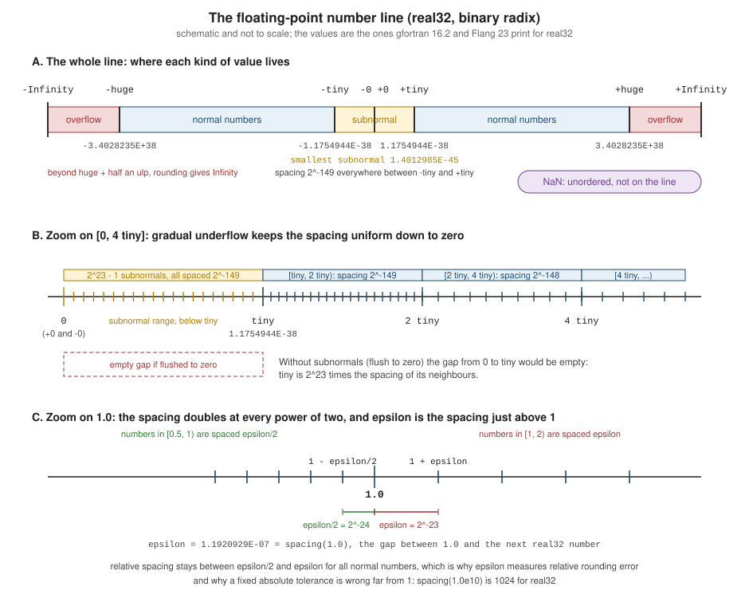

Floating-Point and IEEE Arithmetic
|
This content was generated with the assistance of AI and should be verified against the official documentation before being relied on in production. The reference material consulted while preparing these pages is listed in the section bibliography. |
This page is written against Fortran 2023 (ISO/IEC 1539-1:2023, J3/23-007r1) and was checked on 2026-10-19. Every
example was compiled warning-free with gfortran -std=f2023 -Wall -Wextra -pedantic -fimplicit-none -fcheck=all
(GNU Fortran 16.2) and run, and every example was also built and run with LLVM Flang 23 unless the text says otherwise;
the output shown is real output. Both compilers ran in a Linux container on an aarch64 (Arm) processor, which matters on
this page more than on most: the floating-point status registers, trapping behaviour and a few support inquiries
differ between processor families, so results that depend on the processor are labelled and were not checked on x86-64.
Examples that are deliberately wrong, or that expose a difference between the compilers, are labelled as such and
show the real diagnostics. The two compilers differ more here than on any other topic of this section, and the text
says where. Exceptions and IEEE arithmetic are clause 17 of the standard: 17.1 gives the overview, 17.3 the exceptions,
17.4 the rounding modes, 17.5 the underflow mode, 17.6 halting, 17.7 the floating-point modes and status, 17.10 the
summary of the procedures and 17.11 their specifications. The numeric model is 16.4, the real type is 7.4.3.2 and the
evaluation of numeric operations is 10.1.5.2.4.
Floating-point numbers are the one numeric type whose values are not what they look like. 0.1 is not a number a real
variable can hold, a sum can depend on the order of its terms, a comparison with == is almost always a bug, and a
division by zero is not necessarily an error. Fortran leaves most of this to the processor and, since Fortran 2003,
offers the three intrinsic modules ieee_exceptions, ieee_arithmetic and ieee_features to ask what the processor
does and to control it. They expose the facilities of ISO/IEC 60559:2020, the standard that is also published as IEEE
754-2019 and which Fortran 2023 adopts. This page explains the model, the special values, the comparison problem, every
entity of the three modules, the exception flags and halting, the rounding and underflow modes, and the compiler options
that quietly switch these guarantees off. The numeric model functions (epsilon, fraction, spacing, transfer
and the bit intrinsics) are in
Numeric Model, Bit Manipulation and Conversion,
the kinds in Intrinsic Types and Kinds, the
edit descriptors in
Format Specifications and Edit Descriptors,
stop and error reporting in
Error Handling and Program Termination
and the compiler flags in Compilers and Compiler Options.
The running example is the heatflow solver: an explicit time stepper whose arithmetic stays finite only below a stability
limit, which makes it a natural place to use ieee_is_finite and the exception flags (see Worked example: detecting a diverging heatflow run).
Fortran and IEEE: what is promised and what is not
Fortran is older than IEEE arithmetic, and the standard is written so that a processor without IEEE arithmetic can conform. The language therefore has two layers.
-
The numeric model (16.4). A real kind is described by a set of model numbers, zero or
s * b**e * (f1/b + f2/b**2 + ... + fp/b**p)with a signs, a radixb, a number of digitsp, digitsfkand an exponentebetween a minimum and a maximum, and the inquiry functionsradix,digits,minexponent,maxexponent,epsilon,tiny,huge,precisionandrangereport its parameters. This layer says nothing about how arithmetic is rounded or what happens on overflow. 10.1.5.2.4 lets a processor evaluate any mathematically equivalent expression provided the integrity of parentheses is kept, and says plainly that mathematically equivalent expressions can give different results. An operation whose result is not defined by the arithmetic of the processor, such as an overflow where the processor has no infinity, is prohibited. -
The IEEE modules (clause 17). Whether the modules are provided at all is processor dependent (17.1). When they are, the inquiry functions
ieee_support_datatype,ieee_support_nanand the others tell, kind by kind, which parts of ISO/IEC 60559:2020 the processor implements, and the other procedures read and change the exception flags, the halting mode, the rounding mode and the underflow mode. Complete conformance is not required, even for a kind for whichieee_support_datatypeis true: it requires only that the normal numbers are exactly those of an IEEE format, that addition, subtraction and multiplication conform in at least one rounding mode for normal operands and results, and thatabs,ieee_rem,ieee_copy_sign,ieee_logbandieee_unorderedprovide the corresponding IEEE operations (17.9).
Nothing in the language says that default real is a 32-bit IEEE number, that double precision is 64-bit, or that
the processor rounds to nearest. In practice the compilers tested use IEEE
binary32 for default real and binary64 for double precision, and the examples below confirm it with
ieee_support_standard on both. The portable reading of the standard is: do not rely on
IEEE behaviour without asking, and ask with the inquiry functions of ieee_arithmetic.
The real model and the IEEE binary formats
An IEEE binary floating-point number has a sign bit, a biased exponent field and a stored fraction. For a normal
number the leading digit of the significand is an implied 1, so the number of significand digits p that Fortran reports
as digits is one more than the number of stored fraction bits.
| IEEE name | Fortran kind (iso_fortran_env) | Exponent bits | Stored fraction bits | digits (p) |
precision and range as reported |
|---|---|---|---|---|---|
binary32 |
|
8 |
23 |
24 |
6 and 37 |
binary64 |
|
11 |
52 |
53 |
15 and 307 |
binary128 |
|
15 |
112 |
113 |
33 and 4931 |
binary16 |
|
5 |
10 |
11 |
no compiler tested provides it: the constant is -2 under gfortran 16.2 on aarch64 |
x87 extended |
gfortran kind 10 on x86-64 |
15 |
63 (explicit integer bit) |
64 |
18 and 4931 from the format; not available on the processor tested, so not run |
The first example prints the model parameters of three kinds and then the bit pattern of a few real32 values, taken
apart with transfer into an integer. The fraction field of 0.1 shows why it has no exact representation:
the pattern 1100 1100 1100 ... repeats and is rounded at the end.
program model_and_bits
use, intrinsic :: iso_fortran_env, only: real32, real64, real128, int32, int64
implicit none
integer, parameter :: sp = real32, dp = real64, qp = real128
real(sp) :: a
real(dp) :: b
real(qp) :: c
print '(a)', 'kind radix digits precision range minexp maxexp epsilon tiny huge'
print '(a, 6(1x, i6), 3(1x, es12.4e4))', 'sp ', radix(a), digits(a), precision(a), range(a), &
minexponent(a), maxexponent(a), epsilon(a), tiny(a), huge(a)
print '(a, 6(1x, i6), 3(1x, es12.4e4))', 'dp ', radix(b), digits(b), precision(b), range(b), &
minexponent(b), maxexponent(b), epsilon(b), tiny(b), huge(b)
print '(a, 6(1x, i6), 3(1x, es12.4e4))', 'qp ', radix(c), digits(c), precision(c), range(c), &
minexponent(c), maxexponent(c), epsilon(c), tiny(c), huge(c)
! smallest positive subnormal = 2**(minexponent - digits)
print '(a, es15.7e3)', 'smallest subnormal sp: ', scale(1.0_sp, minexponent(a) - digits(a))
print '(a, es15.7e3)', 'smallest subnormal dp: ', scale(1.0_dp, minexponent(b) - digits(b))
print '(a, es15.7e3)', 'tiny(sp) / 2**23 : ', scale(tiny(a), -(digits(a) - 1))
call show_bits(1.0_sp)
call show_bits(-0.0_sp)
call show_bits(0.1_sp)
call show_bits(tiny(a))
call show_bits(scale(1.0_sp, minexponent(a) - digits(a)))
call show_bits(huge(a))
contains
subroutine show_bits(x)
real(sp), intent(in) :: x
integer(int32) :: w
character(len=32) :: s
integer :: k
w = transfer(x, w)
do k = 0, 31
s(32 - k:32 - k) = merge('1', '0', btest(w, k))
end do
print '(es15.7e3, 2x, a, 1x, a, 1x, a)', x, s(1:1), s(2:9), s(10:32)
end subroutine show_bits
end program model_and_bitsOutput:
kind radix digits precision range minexp maxexp epsilon tiny huge
sp 2 24 6 37 -125 128 1.1921E-0007 1.1755E-0038 3.4028E+0038
dp 2 53 15 307 -1021 1024 2.2204E-0016 2.2251E-0308 1.7977E+0308
qp 2 113 33 4931 -16381 16384 1.9259E-0034 3.3621E-4932 1.1897E+4932
smallest subnormal sp: 1.4012985E-045
smallest subnormal dp: 4.9406565E-324
tiny(sp) / 2**23 : 1.4012985E-045
1.0000000E+000 0 01111111 00000000000000000000000
-0.0000000E+000 1 00000000 00000000000000000000000
1.0000000E-001 0 01111011 10011001100110011001101
1.1754944E-038 0 00000001 00000000000000000000000
1.4012985E-045 0 00000000 00000000000000000000001
3.4028235E+038 0 11111110 11111111111111111111111Source: J3/23-007r1: 16.4 Numeric models, 16.9.78 EPSILON, 16.9.96 HUGE and 16.9.209 TINY, IEEE 754-2019
The output is identical with Flang. Reading it:
-
The model parameters match the table:
digitsis 24, 53 and 113,minexponentis -125, -1021 and -16381 andmaxexponentis 128, 1024 and 16384. Fortran’s exponent range is one more than the IEEE one because Fortran writes the significand as0.1xxxtimes a power of two, with the point before the leading digit, where IEEE writes1.xxx. IEEE’s smallest normal exponent -126 is Fortran’sminexponent-125, and the largest, 127, is 128. -
tinyis the smallest positive normal number (2^-126for real32, 1.1755E-38) andhugethe largest finite number ((2 - 2^-23) * 2^127, 3.4028E+38).epsilonis the spacing of the numbers just above 1,2^-23for real32 (1.1921E-07). It is not the smallest number that can be added to 1, and it is not the unit roundoff: with round-to-nearest the unit roundoff is half of it. -
The bit patterns confirm the layout.
1.0has biased exponent01111111(127, a true exponent of 0) and an all-zero fraction.-0.0has the sign bit set and everything else zero: signed zero exists.tinyhas biased exponent 1 and a zero fraction. The line before the last shows the smallest subnormal: biased exponent 0 and fraction 1, a value of2^-149(1.4013E-45), which the program also computes asscale(1.0_sp, minexponent - digits).hugehas the largest finite exponent11111110and an all-ones fraction. The exponent field11111111is reserved for infinities (fraction zero) and NaNs (fraction nonzero). -
The table on the first lines uses
es12.4e4, because the real128tinyandhugehave four-digit exponents, andi6for the integers, because -16381 does not fit ini5(a first attempt withi5printed asterisks for that entry), see Format Specifications and Edit Descriptors.
The number line, subnormals and spacing
The floating-point numbers are not evenly spaced. Within each interval between consecutive powers of two (a binade)
the numbers are evenly spaced, and the spacing doubles from one binade to the next, so the relative spacing is nearly
constant. That is what epsilon measures. Below tiny, the IEEE standard fills the gap with subnormal numbers (also called
denormal numbers): numbers with the minimum exponent and a leading significand digit of 0, which are evenly spaced down
to zero with the same spacing as the first binade. This gradual underflow means that the difference of two distinct
floating-point numbers is never zero, a property that many convergence tests and divisions silently rely on.

Four consequences are worth keeping in mind.
-
Absolute spacing grows with magnitude.
spacing(1.0e10)is 1024 for real32, so adding 1 to1.0e10changes nothing. Panel C of the figure shows the doubling at 1.0. A tolerance chosen for numbers near 1 is wrong for numbers near 1e10 or 1e-10. -
Subnormals are slow and imprecise. They have fewer significant digits than normal numbers and, on many processors, arithmetic that produces or consumes them is much slower than normal arithmetic. Some processors can flush them to zero (abrupt underflow), which is why the underflow mode exists, see Underflow mode and subnormals.
-
Overflow is not a hard limit. A result larger than
hugeis rounded: in round-to-nearest it becomes infinity when it is at leasthugeplus half the spacing of the top binade, otherwise it stayshuge. In directed rounding modes the rule differs, see Rounding modes. -
nearest,spacing,rrspacing,fraction,exponent,scaleandset_exponentare the Fortran functions that navigate the model without bit tricks; they are described in the numeric model page and used above.
Exceptional values: signed zero, infinity, NaN and subnormals
ISO/IEC 60559:2020 specifies four kinds of value besides the ordinary normal numbers (17.8): signed zeros, subnormal values, infinities created by overflow and division by zero, and NaN (not-a-number) values created by undefined operations. The following table says how each arises, what the usual arithmetic does with it and how Fortran tests for it.
| Value | Created by | Behaviour | Test in Fortran |
|---|---|---|---|
|
the negation of a zero, |
compare equal to each other; |
|
|
overflow, division of a nonzero number by zero, |
|
|
NaN |
|
any arithmetic with a quiet NaN gives a quiet NaN; a NaN compares unequal to everything including itself; the exceptions
are |
|
subnormal |
results smaller than |
|
|
NaNs come in two forms. A quiet NaN propagates silently through arithmetic. A signaling NaN raises the invalid
exception when it is used as an operand; it is meant to mark uninitialised data, and -ffpe-trap=invalid or
-fsignaling-nans can turn that into a trap. The fraction field of a NaN can carry extra information, which is why
a Fortran NaN may print as NaN(...) on some compilers (13.7.2.3.2).
Classifying values with ieee_class and creating them with ieee_value
ieee_class(x) returns a value of the derived type ieee_class_type, which has exactly eleven values: the constants
ieee_signaling_nan, ieee_quiet_nan, ieee_negative_inf, ieee_negative_normal, ieee_negative_subnormal,
ieee_negative_zero, ieee_positive_zero, ieee_positive_subnormal, ieee_positive_normal, ieee_positive_inf and
ieee_other_value, plus the aliases ieee_negative_denormal and ieee_positive_denormal (17.2). Values of this
type can be compared only with == and /=, there is no select case on them and no conversion to a string, so the
example has to write one. ieee_value(x, class) is the inverse: it returns a value of the kind of x belonging
to the requested class. The value of x is not used, only its kind, so the call can be written with a scalar of any value
of the right kind. Which subnormal or NaN ieee_value returns is processor dependent, but it does not vary between calls
(17.11.66).
program classes_and_values
use, intrinsic :: iso_fortran_env, only: real64
use, intrinsic :: ieee_arithmetic
implicit none
integer, parameter :: dp = real64
real(dp) :: nan, pinf, ninf, pzero, nzero, sub, one, x(8)
character(len=18) :: names(8)
integer :: i
print '(a, l1, 1x, l1, 1x, l1, 1x, l1, 1x, l1)', 'support datatype/nan/inf/subnormal/standard: ', &
ieee_support_datatype(1.0_dp), ieee_support_nan(1.0_dp), ieee_support_inf(1.0_dp), &
ieee_support_subnormal(1.0_dp), ieee_support_standard(1.0_dp)
one = 1.0_dp
nan = ieee_value(one, ieee_quiet_nan)
pinf = ieee_value(one, ieee_positive_inf)
ninf = ieee_value(one, ieee_negative_inf)
pzero = ieee_value(one, ieee_positive_zero)
nzero = ieee_value(one, ieee_negative_zero)
sub = ieee_value(one, ieee_positive_subnormal)
x = [nan, pinf, ninf, pzero, nzero, sub, -one, one]
names = [character(len=18) :: 'quiet NaN', '+Infinity', '-Infinity', '+0', '-0', 'subnormal', '-1', '1']
print '(a, t20, a, t45, a, t52, a, t61, a)', 'value', 'class', 'finite', 'normal', 'neg.'
do i = 1, size(x)
print '(a18, 1x, a24, 3(2x, l5))', names(i), class_name(ieee_class(x(i))), &
ieee_is_finite(x(i)), ieee_is_normal(x(i)), ieee_is_negative(x(i))
end do
print *
print '(a, 2(1x, es10.3e3), 2(1x, g0))', 'list of values : ', pinf, sub, nan, ninf
print '(a, f8.2, 1x, f8.2, 1x, f8.2)', 'f8.2 of NaN/+Inf/-Inf: ', nan, pinf, ninf
print '(a, f3.0, 1x, f3.0, 1x, f3.0)', 'f3.0 of NaN/+Inf/-Inf: ', nan, pinf, ninf
print '(a, f2.0)', 'f2.0 of +Inf: ', pinf
print '(a, e10.3, 1x, e10.3)', 'e10.3 of +0/-0: ', pzero, nzero
print '(a, 2(1x, l1), 1x, es11.3e3, 1x, es10.3e3)', 'pzero == nzero, signbit differs: ', &
ieee_quiet_eq(pzero, nzero), ieee_signbit(pzero) .neqv. ieee_signbit(nzero), &
sign(1.0_dp, nzero), atan2(pzero, nzero)
contains
function class_name(c) result(s)
type(ieee_class_type), intent(in) :: c
character(len=24) :: s
if (c == ieee_signaling_nan) then
s = 'ieee_signaling_nan'
else if (c == ieee_quiet_nan) then
s = 'ieee_quiet_nan'
else if (c == ieee_negative_inf) then
s = 'ieee_negative_inf'
else if (c == ieee_negative_normal) then
s = 'ieee_negative_normal'
else if (c == ieee_negative_subnormal) then
s = 'ieee_negative_subnormal'
else if (c == ieee_negative_zero) then
s = 'ieee_negative_zero'
else if (c == ieee_positive_zero) then
s = 'ieee_positive_zero'
else if (c == ieee_positive_subnormal) then
s = 'ieee_positive_subnormal'
else if (c == ieee_positive_normal) then
s = 'ieee_positive_normal'
else if (c == ieee_positive_inf) then
s = 'ieee_positive_inf'
else
s = 'ieee_other_value'
end if
end function class_name
end program classes_and_valuesOutput:
support datatype/nan/inf/subnormal/standard: T T T T T
value class finite normal neg.
quiet NaN ieee_quiet_nan F F F
+Infinity ieee_positive_inf F F F
-Infinity ieee_negative_inf F F T
+0 ieee_positive_zero T T F
-0 ieee_negative_zero T T T
subnormal ieee_positive_subnormal T F F
-1 ieee_negative_normal T T T
1 ieee_positive_normal T T F
list of values : Infinity 1.113E-308 NaN -Inf
f8.2 of NaN/+Inf/-Inf: NaN Infinity -Inf
f3.0 of NaN/+Inf/-Inf: NaN Inf ***
f2.0 of +Inf: **
e10.3 of +0/-0: 0.000E+00 -0.000E+00
pzero == nzero, signbit differs: T T -1.000E+000 3.142E+000Source: J3/23-007r1: 17.2 Derived types, constants, and operators defined in the modules, 17.8 Exceptional values, 17.11.2 IEEE_CLASS, 17.11.12 to 17.11.15 and 17.11.66 IEEE_VALUE, GNU Fortran manual: IEEE modules
Flang gives the same output. What the program shows:
-
ieee_is_normal(0.0)is true. In the Fortran classification, normal includes the zeros (17.11.15): the false cases are infinities, NaNs and subnormals. This differs from the Cisnormalmacro, which is false for zero. -
ieee_is_finiteis true for zeros, subnormals and normal numbers and false for infinities and NaNs.ieee_is_negativeis true for-0and-Infinitybut false for NaN, whatever its sign bit. -
The subnormal returned by
ieee_valueis 1.113E-308, a processor-dependent member of the class. -
The last lines show how the output of exceptional values depends on the edit descriptor, covered in the next subsection:
es10.3e3printsInfinityin a field that is 10 wide, whileg0, which uses the shortest form, printsNaNand-Inf;f8.2prints-Infbecause-Infinityneeds nine positions; andf3.0andf2.0printInfand asterisks. -
pzero == nzerois true, yet the two values differ inieee_signbit, andatan2(+0, -0)is pi: the sign of zero is observable throughsign,atan2, division andieee_copy_sign.
Reading and writing exceptional values
Formatted output of an infinity or NaN follows 13.7.2.3.2: the field is right-justified and contains Inf or
Infinity for an infinity (with a minus sign for a negative one, a plus sign optional) and NaN for a NaN, and a field too
narrow for either is filled with asterisks. For widths of at least 8 (9 with a sign) the long form Infinity is used, for
a shorter width that fits the short form is used, and a zero width gives the short form. Formatted input accepts the
same forms on input (INF, INFINITY, NAN, optionally NAN(...), case-insensitive), and since Fortran 2018 it also
accepts hexadecimal-significand numbers such as 0x1.8p+1 (13.7.2.3.2), with the EX edit descriptor for output.
The standard function ieee_support_io says whether base conversion on formatted input/output conforms to
ISO/IEC 60559:2020 for the four IEEE rounding modes.
program io_exceptional
use, intrinsic :: iso_fortran_env, only: real64
use, intrinsic :: ieee_arithmetic, only: ieee_support_io, ieee_class, ieee_class_type, ieee_is_nan, ieee_is_finite, &
ieee_support_nan, ieee_support_inf, ieee_is_negative
implicit none
integer, parameter :: dp = real64
character(len=*), parameter :: texts(7) = [character(len=12) :: 'NaN', 'nan(q)', '+Inf', '-infinity', '1.5e400', '0x1.8p+1', 'abc']
character(len=:), allocatable :: line
real(dp) :: v
integer :: i, ios
character(len=100) :: msg
print '(a, l1)', 'ieee_support_io (real64): ', ieee_support_io(1.0_dp)
print '(a)', 'text value read with F12.0'
do i = 1, size(texts)
line = texts(i)
read (line, '(f12.0)', iostat=ios, iomsg=msg) v
if (ios /= 0) then
print '(a12, 2x, a, i0, a, a)', texts(i), 'iostat=', ios, ' ', trim(msg)
else
print '(a12, 2x, g0, 3x, a, l1, a, l1, a, l1)', texts(i), v, 'finite=', ieee_is_finite(v), ' nan=', ieee_is_nan(v), &
' negative=', ieee_is_negative(v)
end if
end do
! list-directed read accepts the same IEEE exceptional specifications
line = '3.0 NaN -Inf'
read (line, *) v, v, v
print '(a, g0)', 'last value read list-directed: ', v
! output of a few special values with different edit descriptors
block
real(dp) :: values(3)
values = [0.0_dp, 0.0_dp, 0.0_dp]
values(1) = 1.0_dp/real(command_argument_count(), dp) ! +Infinity (division by zero)
values(2) = -values(1)
values(3) = values(1) - values(1) ! NaN
print '(a, 3(1x, f10.3))', 'f10.3 : ', values
print '(a, 3(1x, es10.3))', 'es10.3: ', values
print '(a, 3(1x, f4.1))', 'f4.1 : ', values
print '(a, 3(1x, f3.1))', 'f3.1 : ', values
print '(a, 3(1x, g0))', 'g0 : ', values
print *, 'list : ', values
end block
end program io_exceptionalOutput with gfortran 16.2:
ieee_support_io (real64): T
text value read with F12.0
NaN NaN finite=F nan=T negative=F
nan(q) NaN finite=F nan=T negative=F
+Inf Inf finite=F nan=F negative=F
-infinity -Inf finite=F nan=F negative=T
1.5e400 Inf finite=F nan=F negative=F
0x1.8p+1 iostat=5010 Bad value during floating point read
abc iostat=5010 Bad value during floating point read
last value read list-directed: -Inf
f10.3 : Infinity -Infinity NaN
es10.3: Infinity -Infinity NaN
f4.1 : Inf -Inf NaN
f3.1 : Inf *** NaN
g0 : Inf -Inf NaN
list : Infinity -Infinity NaNThe same program built with Flang 23 prints the same output except for three input rows and the final line:
ieee_support_io (real64): T
text value read with F12.0
NaN NaN finite=F nan=T negative=F
nan(q) NaN finite=F nan=T negative=F
+Inf Inf finite=F nan=F negative=F
-infinity -Inf finite=F nan=F negative=T
1.5e400 iostat=1036 Real or complex input value overflows type
0x1.8p+1 3. finite=T nan=F negative=F
abc iostat=1030 Bad real input data at column 2 of record 1
last value read list-directed: -Inf
f10.3 : Infinity -Infinity NaN
es10.3: Infinity -Infinity NaN
f4.1 : Inf -Inf NaN
f3.1 : Inf *** NaN
g0 : Inf -Inf NaN
list : Inf -Inf NaNThe differences are instructive:
-
1.5e400on input. gfortran stores+Infinitywithiostat=0; Flang reports the erroriostat=1036. The compilers handle an overflowing input value differently, so test your own data withiostat=. -
A hexadecimal-significand input field (
0x1.8p+1, which is 3.0) is accepted by Flang and rejected by gfortran 16.2 withiostat=5010, although the feature is part of Fortran 2018 (Annex C.1, the item on input/output). -
Error numbers and messages are compiler specific.
iostatis nonzero (5010 versus 1030 for the textabc) and theiomsgtext differs, so testios /= 0, never a particular value. -
List-directed output of the three special values is
Infinity -Infinity NaNin wide fields under gfortran and the shortInf -Inf NaNunder Flang. Both are allowed; use an explicit format when the text is parsed afterwards. -
Output with
f3.1of-Infinityfills the field with asterisks (the field is 3 wide and needs 4).
The EX edit descriptor, which prints a real in hexadecimal-significand form, is also part of Fortran 2018. GNU Fortran 16.2 rejects it, Flang accepts it:
program hex_float
use, intrinsic :: iso_fortran_env, only: real64
implicit none
real(real64) :: x(4)
x = [1.0_real64, 0.1_real64, -0.0_real64, tiny(1.0_real64)]
print '(4(1x, ex24.13))', x
print '(4(1x, ex0.0))', x
print '(4(1x, z16.16))', x
end program hex_floatgfortran 16.2:
20_hex_float.f90:6:28:
6 | print '(4(1x, ex24.13))', x
| 1
Error: Period required in format specifier E at (1)
20_hex_float.f90:7:27:
7 | print '(4(1x, ex0.0))', x
| 1
Error: Period required in format specifier E at (1)
rc=1Flang 23 builds it and prints (the leading hexadecimal digit is processor dependent, so 0X8.0P-3 and 0X1.0P+0 are both a legal rendering of 1.0):
0X8.0000000000000P-3 0XC.CCCCCCCCCCCD0P-7 -0X0.0000000000000P+0 0X8.0000000000000P-1025
0X8.P-3 0XC.CCCCCCCCCCCDP-7 -0X0.P+0 0X8.P-1025
3FF0000000000000 3FB999999999999A 8000000000000000 0010000000000000The z16.16 line, the third of the output, is portable and exact: it prints the 64 bits of the number. For a round-trip of a real value through text without loss, use es25.17e3
for real64 (17 significant digits) or the hexadecimal forms, see
Format Specifications and Edit Descriptors.
Rounding error and comparing floating-point numbers
Every floating-point operation rounds its exact result to a representable number, so a computation accumulates
errors, and two computations that are equal in real arithmetic can differ. The root cause is representation: 0.1 is the
binary number 0.0001100110011…, repeating forever, and the stored value is the nearest representable one. The classic
symptom is that 0.1 + 0.2 is not 0.3. Whether it is depends on the kind, which is what makes a test pass on one
machine and fail on another.
The next program is deliberately problematic: it uses == and /= on reals. The compiler options this section uses
include -Wextra, which turns on -Wcompare-reals, and GNU Fortran warns at every comparison. The program is in
default real, which is real32.
program nan_compare_warning
use, intrinsic :: ieee_arithmetic, only: ieee_value, ieee_quiet_nan, ieee_is_nan, ieee_unordered
implicit none
real :: x, y, nan
nan = ieee_value(x, ieee_quiet_nan)
x = 0.1
y = 0.2
if (x + y == 0.3) print '(a)', 'sum equals 0.3'
if (nan == nan) print '(a)', 'NaN equals itself'
if (nan /= nan) print '(a)', 'NaN differs from itself'
if (.not. (nan < 1.0) .and. .not. (nan >= 1.0)) print '(a)', 'NaN is neither below nor above 1'
print '(a, l1, 1x, l1)', 'ieee_is_nan, ieee_unordered: ', ieee_is_nan(nan), ieee_unordered(nan, 1.0)
end program nan_compare_warninggfortran 16.2 warns three times (the compilation still succeeds):
04_nan_compare_warning.f90:8:8:
8 | if (x + y == 0.3) print '(a)', 'sum equals 0.3'
| 1
Warning: Equality comparison for REAL(4) at (1) [-Wcompare-reals]
04_nan_compare_warning.f90:9:6:
9 | if (nan == nan) print '(a)', 'NaN equals itself'
| 1
Warning: Equality comparison for REAL(4) at (1) [-Wcompare-reals]
04_nan_compare_warning.f90:10:6:
10 | if (nan /= nan) print '(a)', 'NaN differs from itself'
| 1
Warning: Inequality comparison for REAL(4) at (1) [-Wcompare-reals]
rc=0and the program prints:
sum equals 0.3
NaN differs from itself
NaN is neither below nor above 1
ieee_is_nan, ieee_unordered: T TFlang 23 gives no warning and the same output. Source: GNU Fortran manual: Options to request or suppress errors and warnings, J3/23-007r1: 10.1.5.5 Relational intrinsic operations and 17.3 The exceptions
Three facts are in this output:
-
In real32 the sum of
0.1and0.2happens to round to the same number as0.3, so the test is true. It is false in real64 (next example). A test that works by luck in single precision is the worst kind. -
nan == nanis false andnan /= nanis true, sox /= xtests for NaN on a conforming compiler, but the optimizer is allowed to fold it away when it believes there are no NaNs, see Compiler options that change floating-point semantics. Useieee_is_nan. -
The ordered comparisons are false in both directions when one operand is NaN, so
.not. (a < b)is not the same asa >= b. The standard has a note on exactly this case (10.1.5.5.1, Note): expressions are equivalent only when no operand can be a NaN.
A comparison that works
An equality test on computed reals should be a test of closeness. There is no universal tolerance; the right one depends on what is being compared. The rules that work in general are:
-
Compare with a relative tolerance scaled by the larger magnitude, so that the test means the same at 1e-10 and at 1e10.
-
Add an absolute tolerance for numbers near zero, where the relative test fails because one of the numbers is zero. This one has to come from the problem, for example temperatures within 1e-9 kelvin, and has no useful universal default.
-
Treat NaN as unequal to everything, and make the infinities equal only to themselves.
-
Choose the relative tolerance from
epsilonof the kind, as a small multiple (a few ulps), not a literal such as1.0e-6. A literal that is too small for real32 is never satisfied, and one that is too large for real64 hides real errors. -
When the question is exactly how many representable numbers apart two values are, count units in the last place (ulps) by mapping the bit pattern to an integer that increases with the value.
module heatflow_compare
use, intrinsic :: iso_fortran_env, only: real64, int64
use, intrinsic :: ieee_arithmetic, only: ieee_is_finite, ieee_is_nan, ieee_quiet_eq
implicit none
private
public :: dp, nearly_equal, ulp_distance
integer, parameter :: dp = real64
contains
!> Absolute-or-relative comparison: equal if they differ by at most abs_tol,
!> or by at most rel_tol times the larger magnitude. NaN is never equal to anything.
pure logical function nearly_equal(a, b, rel_tol, abs_tol) result(ok)
real(dp), intent(in) :: a, b
real(dp), intent(in), optional :: rel_tol, abs_tol
real(dp) :: rt, at
rt = 4.0_dp*epsilon(a)
at = tiny(a)
if (present(rel_tol)) rt = rel_tol
if (present(abs_tol)) at = abs_tol
if (ieee_is_nan(a) .or. ieee_is_nan(b)) then
ok = .false.
else if (ieee_quiet_eq(a, b)) then ! also true for +0 and -0, and for equal infinities
ok = .true.
else if (.not. (ieee_is_finite(a) .and. ieee_is_finite(b))) then
ok = .false. ! one infinity, or opposite infinities
else
ok = abs(a - b) <= max(at, rt*max(abs(a), abs(b)))
end if
end function nearly_equal
!> Number of representable doubles between a and b (monotonic integer mapping).
pure integer(int64) function ulp_distance(a, b) result(d)
real(dp), intent(in) :: a, b
d = abs(ordered(a) - ordered(b))
end function ulp_distance
pure integer(int64) function ordered(x) result(k)
real(dp), intent(in) :: x
k = transfer(x, k)
if (k < 0_int64) k = -iand(k, huge(k)) ! sign-magnitude to two's complement: -0 maps to 0
end function ordered
end module heatflow_compare
program comparison
use heatflow_compare
use, intrinsic :: ieee_arithmetic, only: ieee_quiet_eq, ieee_value, ieee_quiet_nan, ieee_positive_inf
implicit none
real(dp) :: a, b, c, nan, inf, s
integer :: i
a = 0.1_dp
b = 0.2_dp
c = 0.3_dp
nan = ieee_value(a, ieee_quiet_nan)
inf = ieee_value(a, ieee_positive_inf)
print '(a, l1)', '0.1 + 0.2 == 0.3 (exact compare) : ', ieee_quiet_eq(a + b, c)
print '(a, l1)', 'nearly_equal(0.1 + 0.2, 0.3) : ', nearly_equal(a + b, c)
print '(a, es10.3e3)', 'difference 0.1 + 0.2 - 0.3 : ', (a + b) - c
print '(a, i0)', 'ulp distance 0.1 + 0.2 and 0.3 : ', ulp_distance(a + b, c)
print '(a, es10.3e3, a, es10.3e3)', 'epsilon(1.0_dp) = ', epsilon(a), ', spacing(0.3_dp) = ', spacing(c)
s = 0.0_dp
do i = 1, 10
s = s + a
end do
print '(a, l1, 2x, l1, 2x, i0)', 'ten times 0.1 == 1.0 / nearly / ulps : ', ieee_quiet_eq(s, 1.0_dp), &
nearly_equal(s, 1.0_dp), ulp_distance(s, 1.0_dp)
print '(a, 3(1x, l1))', 'NaN vs NaN, NaN vs 1, Inf vs Inf (nearly_equal): ', nearly_equal(nan, nan), &
nearly_equal(nan, 1.0_dp), nearly_equal(inf, inf)
print '(a, l1, 1x, l1)', 'zero is close to 1e-300 only with abs_tol: ', nearly_equal(0.0_dp, 1.0e-300_dp), &
nearly_equal(0.0_dp, 1.0e-300_dp, abs_tol=1.0e-12_dp)
print '(a, i0, 1x, i0)', 'ulp distances 1 to next, -0 to +0: ', ulp_distance(1.0_dp, 1.0_dp + epsilon(1.0_dp)), &
ulp_distance(-0.0_dp, 0.0_dp)
end program comparisonOutput:
0.1 + 0.2 == 0.3 (exact compare) : F
nearly_equal(0.1 + 0.2, 0.3) : T
difference 0.1 + 0.2 - 0.3 : 5.551E-017
ulp distance 0.1 + 0.2 and 0.3 : 1
epsilon(1.0_dp) = 2.220E-016, spacing(0.3_dp) = 5.551E-017
ten times 0.1 == 1.0 / nearly / ulps : F T 1
NaN vs NaN, NaN vs 1, Inf vs Inf (nearly_equal): F F T
zero is close to 1e-300 only with abs_tol: F T
ulp distances 1 to next, -0 to +0: 1 0Source: Fortran Programming Language: Best Practices, Floating Point Numbers, J3/23-007r1: 16.9.195 SPACING, 17.11.28 IEEE_QUIET_EQ and 17.11.13 IEEE_IS_NAN
The output is identical with Flang. Notes on the code and the output:
-
0.1_dp + 0.2_dp - 0.3_dpis 5.551E-17, exactlyspacing(0.3_dp), so the two numbers are one ulp apart, andulp_distancesays 1.epsilon(1.0_dp)is 2.22E-16, four times that difference, which is why the default relative tolerance of4 * epsilonaccepts it. -
Ten additions of
0.1give a result one ulp from 1.0:== 1.0is false whilenearly_equalis true. -
The exact comparison is written
ieee_quiet_eq(a, b). It means the same as==for ordinary numbers, but it does not trigger the-Wcompare-realswarning, because it states that the comparison is meant to be exact. It also documents the intent, and it is the function that is correct even if the compiler is told to honour signaling NaNs (see below). -
ulp_distancemaps a real64 to a 64-bit integer. Positive reals already order like their bit patterns; negative reals have the sign bit set and order backwards, so they are mapped to the negated bits without the sign. That makes-0and+0map to the same integer, so the distance is zero. The distance between1.0and1.0 + epsilonis one.
The comparison functions do not remove the problem of accumulated error; they make an assertion about two numbers that have already been computed. If the sums themselves are inaccurate (see the compensated sum below), no tolerance makes the answer trustworthy. For a unit test of a numerical routine, compare against a reference with a tolerance derived from the condition of the problem, not from the first number that makes the test pass.
Quiet and signaling comparisons
ISO/IEC 60559:2020 defines two kinds of comparison predicate. A signaling predicate raises the invalid exception when an operand is a NaN. A quiet predicate
raises it only for a signaling NaN. Fortran 2018 added both (Annex C.1): the intrinsic relational operators <, <=, >,
>= are signaling and ==, /= are quiet (Table 17.1), and the functions ieee_quiet_eq, _ne, _lt, _le, _gt, _ge and
ieee_signaling_eq through _ge (17.11.28 to 17.11.33 and 17.11.45 to 17.11.50) select the behaviour explicitly. ieee_unordered(x, y)
tests whether either argument is a NaN without any exception for a quiet NaN.
program quiet_signaling
use, intrinsic :: iso_fortran_env, only: real64
use, intrinsic :: ieee_arithmetic
implicit none
integer, parameter :: dp = real64
real(dp) :: one, nan, snan
logical :: res, inv
one = 1.0_dp + real(command_argument_count(), dp)
nan = ieee_value(one, ieee_quiet_nan)
snan = ieee_value(one, ieee_signaling_nan)
print '(a26, 2x, a8, 2x, a)', 'comparison (NaN, 1)', 'result', 'invalid flag afterwards'
call ieee_set_flag(ieee_invalid, .false.)
res = nan < one
call ieee_get_flag(ieee_invalid, inv)
print '(a26, 2x, l8, 2x, l1)', 'nan < 1 (relational)', res, inv
call ieee_set_flag(ieee_invalid, .false.)
res = ieee_quiet_lt(nan, one)
call ieee_get_flag(ieee_invalid, inv)
print '(a26, 2x, l8, 2x, l1)', 'ieee_quiet_lt', res, inv
call ieee_set_flag(ieee_invalid, .false.)
res = ieee_signaling_lt(nan, one)
call ieee_get_flag(ieee_invalid, inv)
print '(a26, 2x, l8, 2x, l1)', 'ieee_signaling_lt', res, inv
call ieee_set_flag(ieee_invalid, .false.)
res = ieee_quiet_eq(snan, one)
call ieee_get_flag(ieee_invalid, inv)
print '(a26, 2x, l8, 2x, l1)', 'quiet_eq, signaling NaN', res, inv
call ieee_set_flag(ieee_invalid, .false.)
res = ieee_unordered(nan, one)
call ieee_get_flag(ieee_invalid, inv)
print '(a26, 2x, l8, 2x, l1)', 'ieee_unordered', res, inv
end program quiet_signalinggfortran 16.2:
comparison (NaN, 1) result invalid flag afterwards
nan < 1 (relational) F T
ieee_quiet_lt F F
ieee_signaling_lt F T
quiet_eq, signaling NaN F T
ieee_unordered T FFlang 23 differs on the first row, nan < 1, which does not raise the flag:
comparison (NaN, 1) result invalid flag afterwards
nan < 1 (relational) F F
ieee_quiet_lt F F
ieee_signaling_lt F T
quiet_eq, signaling NaN F T
ieee_unordered T FThe standard requires the relational operator < to signal (17.3, Table 17.1), which gfortran does and Flang 23 does not;
the explicit function ieee_signaling_lt signals on both. Use the functions when the exception behaviour matters, and do not rely on a
relational operator to set a flag.
The three IEEE modules
The three modules are intrinsic modules (14.2.1). They are accessed with a use statement whose nature is intrinsic, written
use, intrinsic :: ieee_arithmetic. Their types and procedures are
not themselves intrinsic (17.1, Note 1). In a scoping unit that accesses ieee_exceptions or ieee_arithmetic the exceptions ieee_overflow and
ieee_divide_by_zero are supported for all kinds of real and complex IEEE floating-point data (17.1); whether the others are is for
ieee_support_flag to say.
-
ieee_exceptionsdefines the exception flag type and its constants, the modes and status types and the procedures that get, set and save flags, halting modes and the status. -
ieee_arithmeticbehaves as if it containeduse ieee_exceptions(everything public inieee_exceptionsis public in it), and adds the class and rounding types and everything else: the inquiry functions, the elemental functions, the rounding and underflow procedures. -
ieee_featuresdefines only the typeieee_features_typeand named constants:ieee_datatype,ieee_denormal,ieee_divide,ieee_halting,ieee_inexact_flag,ieee_inf,ieee_invalid_flag,ieee_nan,ieee_rounding,ieee_sqrt,ieee_subnormalandieee_underflow_flag. They are not data to be passed to procedures: their accessibility is a request to the compiler. If a scoping unit accesses a constant ofieee_features, the processor must support that feature for at least one kind of real (17.1). Ifieee_exceptionsorieee_arithmeticis accessed butieee_featuresis not, the supported subset is processor dependent, and the fullest support comes from accessing bothieee_arithmeticand all ofieee_features, at the cost that execution might be slowed by features that are not needed.
If a scoping unit does not access any of the three modules, the processor decides the level of support, which need not include any exception, and a flag that is signaling on entry is still signaling on exit (17.1).
! Requesting the fullest IEEE support in a scoping unit (17.1): access all of IEEE_FEATURES as well.
module numerics_ieee
use, intrinsic :: ieee_arithmetic
use, intrinsic :: ieee_features
implicit none
private
public :: describe
contains
subroutine describe()
print '(a, l1)', 'ieee_support_standard() for all kinds: ', ieee_support_standard()
print '(a, l1)', 'ieee_support_datatype() for all kinds: ', ieee_support_datatype()
print '(a, l1)', 'ieee_support_underflow_control() for all kinds: ', ieee_support_underflow_control()
end subroutine describe
end module numerics_ieee
program features
use numerics_ieee, only: describe
implicit none
call describe()
end program featuresOutput (gfortran 16.2 and Flang 23 print the same):
ieee_support_standard() for all kinds: T
ieee_support_datatype() for all kinds: T
ieee_support_underflow_control() for all kinds: Fieee_support_underflow_control() is false on both compilers here, because it is false for at least one kind on this processor: for all three kinds with gfortran 16.2
and for real128 with Flang 23 (see the matrix below). The inquiry functions come in two forms, with or without a real argument. With the argument they describe that kind; without it they are true only when
true for all reals.
Availability and compiler support
The GNU Fortran manual lists the platforms on which it provides the IEEE modules: i386 and x86_64 processors, platforms that use the GNU C
library, platforms with SysV/386 routines for the floating-point interface (including Solaris and the BSDs) and AIX. It adds that code using
them should be compiled with -fno-unsafe-math-optimizations -frounding-math -fsignaling-nans for full compliance
(GNU Fortran manual, IEEE modules). The aarch64 container used here provides the modules too, and the examples work with the
default options, so read the manual list as the minimum, and test the inquiry functions on the processor that matters.
The matrix below prints the support inquiries for the three IEEE kinds on this processor:
program support_matrix
use, intrinsic :: iso_fortran_env, only: real32, real64, real128
use, intrinsic :: ieee_arithmetic
implicit none
real(real32) :: a
real(real64) :: b
real(real128) :: c
print '(a30, 3(2x, a8))', 'inquiry (argument kind)', 'real32', 'real64', 'real128'
print '(a30, 3(2x, l8))', 'ieee_support_datatype', ieee_support_datatype(a), ieee_support_datatype(b), ieee_support_datatype(c)
print '(a30, 3(2x, l8))', 'ieee_support_nan', ieee_support_nan(a), ieee_support_nan(b), ieee_support_nan(c)
print '(a30, 3(2x, l8))', 'ieee_support_inf', ieee_support_inf(a), ieee_support_inf(b), ieee_support_inf(c)
print '(a30, 3(2x, l8))', 'ieee_support_subnormal', ieee_support_subnormal(a), ieee_support_subnormal(b), &
ieee_support_subnormal(c)
print '(a30, 3(2x, l8))', 'ieee_support_divide', ieee_support_divide(a), ieee_support_divide(b), ieee_support_divide(c)
print '(a30, 3(2x, l8))', 'ieee_support_sqrt', ieee_support_sqrt(a), ieee_support_sqrt(b), ieee_support_sqrt(c)
print '(a30, 3(2x, l8))', 'ieee_support_io', ieee_support_io(a), ieee_support_io(b), ieee_support_io(c)
print '(a30, 3(2x, l8))', 'ieee_support_underflow_control', ieee_support_underflow_control(a), &
ieee_support_underflow_control(b), ieee_support_underflow_control(c)
print '(a30, 3(2x, l8))', 'ieee_support_rounding(ieee_up)', ieee_support_rounding(ieee_up, a), ieee_support_rounding(ieee_up, b), &
ieee_support_rounding(ieee_up, c)
print '(a30, 3(2x, l8))', 'ieee_support_flag(overflow)', ieee_support_flag(ieee_overflow, a), ieee_support_flag(ieee_overflow, b), &
ieee_support_flag(ieee_overflow, c)
print '(a30, 3(2x, l8))', 'ieee_support_flag(inexact)', ieee_support_flag(ieee_inexact, a), ieee_support_flag(ieee_inexact, b), &
ieee_support_flag(ieee_inexact, c)
print '(a30, 3(2x, l8))', 'ieee_support_halting(overflow)', ieee_support_halting(ieee_overflow), ieee_support_halting(ieee_overflow), &
ieee_support_halting(ieee_overflow)
print '(a30, 3(2x, l8))', 'ieee_support_standard', ieee_support_standard(a), ieee_support_standard(b), ieee_support_standard(c)
print '(a30, 3(2x, i8))', 'selected_real_kind(6/15/30)', ieee_selected_real_kind(6), ieee_selected_real_kind(15), &
ieee_selected_real_kind(30)
end program support_matrixgfortran 16.2:
inquiry (argument kind) real32 real64 real128
ieee_support_datatype T T T
ieee_support_nan T T T
ieee_support_inf T T T
ieee_support_subnormal T T T
ieee_support_divide T T T
ieee_support_sqrt T T T
ieee_support_io T T T
ieee_support_underflow_control F F F
ieee_support_rounding(ieee_up) T T T
ieee_support_flag(overflow) T T T
ieee_support_flag(inexact) T T T
ieee_support_halting(overflow) T T T
ieee_support_standard T T T
selected_real_kind(6/15/30) 4 8 16Flang 23 gives the same table except for one line: ieee_support_underflow_control is T T F for real32, real64 and real128, so Flang 23
can control the underflow mode for the first two kinds on this processor and gfortran 16.2 cannot.
Rules for using the inquiry functions:
-
The result describes a kind, not a value. The argument may be an unallocated or undefined variable, a literal or an array.
-
ieee_support_datatype(x)is the gate: if it is false, almost every other IEEE function must not be invoked withx(the restriction is on the program, 17.11.1). Writeif (ieee_support_datatype(x)) then ... else ... end ifaround calls in portable libraries. -
ieee_support_standard(x)is true when the datatype, divide, flag, halting, inf, nan, rounding, sqrt and subnormal inquiries are all true forx: it is the quick test of whether a kind is IEEE. -
ieee_support_flag(flag, x)andieee_support_halting(flag)are transformational: they may be used in a constant expression wherexis a constant, but Flang notes that where the answer is not known at compile time (on Arm processors, where halting is a hardware option that varies between processors) it generates a runtime check and rejectsieee_support_haltingin a context that needs a constant (Flang documentation, Extensions). -
ieee_support_rounding(mode, x)is also transformational;ieee_support_iosays that formatted base conversion conforms for the rounding modes up, down, zero and nearest.
Every entity of the modules
The tables list every public entity of the three modules in Fortran 2023 (Tables 17.2 and 17.3 in 17.10, and the types and constants of 17.2). The class column uses the standard’s classification: E elemental function, I inquiry function, T transformational function, SS simple subroutine, ES simple elemental subroutine. The provenance column is the edition that introduced the entity: the three modules came with Fortran 2003, and everything the table does not mark as newer is from that edition. Entities added by Fortran 2018 come from Annex C.1 of the standard (the list of features that were new in Fortran 2018, in its item on changes to the three IEEE modules) and those added by Fortran 2023 from the foreword. The last two columns are what the compilers do on this page’s test machine.
| Entity | Meaning | Module | Provenance | gfortran 16.2 / Flang 23 |
|---|---|---|---|---|
|
identify one exception flag |
|
F2003 |
both |
|
array constants of flags: overflow, divide-by-zero, invalid, and all five |
|
F2003 |
both |
|
save the modes, or all flags and modes |
|
status type F2003; modes type F2018 |
both |
|
classification |
|
F2003 |
both |
|
rounding modes |
|
F2003 |
both |
|
ties-away rounding, optional (required if a radix-10 kind has IEEE support) |
|
F2018 |
accepted by both; |
|
simple elemental operators |
|
F2003 |
both |
|
request support |
|
F2003; |
both |
| Procedure | Result | Class | Provenance | gfortran 16.2 / Flang 23 |
|---|---|---|---|---|
|
IEEE arithmetic for the kind (17.9) |
I |
F2003 |
both |
|
subnormal arithmetic and assignments; the two names are synonyms |
I |
denormal F2003, subnormal F2018 |
both |
|
division and square root meet 60559 accuracy |
I |
F2003 |
both |
|
infinities, NaNs |
I |
F2003 |
both |
|
formatted conversion conforms |
I |
F2003 |
both |
|
all of the above plus flags, halting and rounding |
I |
F2003 |
both |
|
underflow mode can be changed |
I |
F2003 |
both accept it; value differs (see matrix) |
|
that rounding mode can be set |
T |
F2003 |
both |
|
flag available; halting control available |
T |
F2003 |
both |
|
kind with IEEE support, a negative value when none exists |
T |
F2003; |
both; no radix-10 kind exists ( |
| Procedure | Result | Provenance | gfortran 16.2 / Flang 23 |
|---|---|---|---|
|
classify; a value of a class |
F2003 |
both |
|
logical tests |
F2003 |
both |
|
magnitude of |
copy_sign F2003, signbit F2018 |
both |
|
unbiased exponent (equal to |
F2003 |
both |
|
IEEE remainder, |
F2003; same-radix rule F2018 |
both |
|
round to an integral value, in the current mode or in the mode |
F2003; |
rint(x) both; with |
|
adjacent number in the direction of |
F2003 |
both |
|
adjacent higher and lower number |
F2018 |
Flang only |
|
|
F2018 |
both |
|
conversion to integer with a rounding mode, to real with the current mode |
F2018 |
Flang only |
|
true if |
F2003 |
both |
|
quiet comparisons |
F2018 |
both |
|
signaling comparisons |
F2018 |
both |
|
maximum and minimum, ignoring one quiet NaN |
F2018, semantics for a signaling NaN changed in F2023 |
both; gfortran keeps the F2018 behaviour |
|
maximum and minimum, propagating a NaN |
F2023 |
Flang only |
| Procedure | Action | Module | Provenance | gfortran 16.2 / Flang 23 |
|---|---|---|---|---|
|
read or set the flag(s); |
|
F2003 |
both |
|
read or set whether the exception stops the program |
|
F2003 |
both |
|
save and restore all flags and modes |
|
F2003 |
both |
|
save and restore the modes only (rounding, underflow, halting) |
|
F2018 |
both |
|
read or set the binary or decimal rounding mode |
|
F2003; |
both |
|
gradual or abrupt underflow |
|
F2003 |
both accept; only Flang supports the control here |
F2023 made ieee_get_rounding_mode, ieee_get_underflow_mode, ieee_set_rounding_mode, ieee_set_underflow_mode,
ieee_get_modes, ieee_get_status, ieee_set_modes and ieee_set_status pure and simple (Foreword). The consequence
is visible in the do concurrent example below: both compilers still treat the setters as impure.
Exceptions, flags and halting
IEEE arithmetic separates signalling an exception from stopping. When an exceptional condition arises, the operation delivers a default result, and a sticky status flag is raised. The flag stays raised until the program clears it. Nothing else happens unless the program has asked for halting, which turns the condition into a trap. This is the model the Fortran procedures expose. The five exceptions (17.3) are:
| Flag constant | Occurs when | Default result delivered (IEEE) |
|---|---|---|
|
an operation has no defined result: |
a quiet NaN |
|
a finite result too large for the format; always supported when the module is accessed |
infinity or |
|
division of a nonzero finite number by zero; always supported when the module is accessed |
infinity with the sign of the result |
|
a result smaller than |
a subnormal or zero |
|
the result is not exactly representable; not required to be supported |
the rounded result |
Each flag has a value, quiet or signaling, read by ieee_get_flag(flag, value) where value is true when the flag is
signaling, set by ieee_set_flag(flag, .true. or .false.). The flag arguments may be arrays, so the whole usual set is read
or cleared in one call with the constants ieee_usual (overflow, divide-by-zero, invalid) and ieee_all. The flag
is initially quiet and stays signaling once set within a procedure, unless cleared. The first example performs several operations and prints the
five flags after each. The values the compiler cannot see through come from command_argument_count(), because a division by the
literal 0.0 would be rejected or folded at compile time.
program flags
use, intrinsic :: iso_fortran_env, only: real64
use, intrinsic :: ieee_arithmetic ! also makes everything of ieee_exceptions available
implicit none
integer, parameter :: dp = real64
type(ieee_flag_type), parameter :: all_flags(5) = [ieee_invalid, ieee_overflow, ieee_divide_by_zero, &
ieee_underflow, ieee_inexact]
real(dp) :: zero, big, small, neg, three, r
logical :: raised(5)
integer :: i
print '(a, 5(1x, l1))', 'ieee_support_flag (invalid overflow div0 underflow inexact):', &
[(ieee_support_flag(all_flags(i), 1.0_dp), i = 1, 5)]
print '(a, 5(1x, l1))', 'ieee_support_halting for the same flags :', &
[(ieee_support_halting(all_flags(i)), i = 1, 5)]
! values the optimizer cannot see through: computed from a run-time quantity
zero = real(command_argument_count(), dp)
big = huge(1.0_dp)*(1.0_dp + zero)
small = tiny(1.0_dp)*(1.0_dp + zero)
neg = -1.0_dp - zero
three = 3.0_dp + zero
print '(a24, 5(1x, a9), 2x, a)', 'operation', 'invalid', 'overflow', 'div-by-0', 'underflow', 'inexact', 'result'
call ieee_set_flag(ieee_all, .false.)
call ieee_get_flag(all_flags, raised)
call report('all flags cleared', raised, 0.0_dp)
call ieee_set_flag(ieee_all, .false.) ! formatted output may itself set the inexact flag
r = 1.0_dp/zero
call ieee_get_flag(all_flags, raised)
call report('1/0', raised, r)
call ieee_set_flag(ieee_all, .false.)
r = sqrt(neg)
call ieee_get_flag(all_flags, raised)
call report('sqrt(-1)', raised, r)
call ieee_set_flag(ieee_all, .false.)
r = big*2.0_dp
call ieee_get_flag(all_flags, raised)
call report('huge*2', raised, r)
call ieee_set_flag(ieee_all, .false.)
r = small/1.0e10_dp
call ieee_get_flag(all_flags, raised)
call report('tiny/1e10', raised, r)
call ieee_set_flag(ieee_all, .false.)
r = 1.0_dp/three
call ieee_get_flag(all_flags, raised)
call report('1/3', raised, r)
call ieee_set_flag(ieee_all, .false.)
r = 0.5_dp/(1.0_dp + zero)
call ieee_get_flag(all_flags, raised)
call report('0.5/1 (exact)', raised, r)
call ieee_set_flag(ieee_all, .false.)
! flags are sticky: they stay signaling until they are cleared
r = sqrt(neg)
r = 1.0_dp + r*zero
call ieee_get_flag(all_flags, raised)
call report('NaN propagates', raised, r)
contains
! Prints a row. It must not query the flags itself: see the text about flags on entry to a procedure.
subroutine report(label, signaling, value)
character(len=*), intent(in) :: label
logical, intent(in) :: signaling(:)
real(dp), intent(in) :: value
print '(a24, 5(1x, a9), 2x, es24.17e3)', label, merge('SIGNALING', 'quiet ', signaling), value
end subroutine report
end program flagsOutput (identical with Flang 23):
ieee_support_flag (invalid overflow div0 underflow inexact): T T T T T
ieee_support_halting for the same flags : T T T T T
operation invalid overflow div-by-0 underflow inexact result
all flags cleared quiet quiet quiet quiet quiet 0.00000000000000000E+000
1/0 quiet quiet SIGNALING quiet quiet Infinity
sqrt(-1) SIGNALING quiet quiet quiet quiet NaN
huge*2 quiet SIGNALING quiet quiet SIGNALING Infinity
tiny/1e10 quiet quiet quiet SIGNALING SIGNALING 2.22507404261063794E-318
1/3 quiet quiet quiet quiet SIGNALING 3.33333333333333315E-001
0.5/1 (exact) quiet quiet quiet quiet quiet 5.00000000000000000E-001
NaN propagates SIGNALING quiet quiet quiet quiet NaNReading the table:
-
1/0signals only divide-by-zero,sqrt(-1)only invalid, as the standard says. -
huge * 2signals overflow and inexact, andtiny / 1e10signals underflow and inexact. This is IEEE behaviour: an overflowed or underflowed result is inexact. The Flang documentation notes that on Arm processors the inexact flag is raised together with overflow or underflow, both by expression evaluation and by a call toieee_set_flag. -
1/3is inexact only.0.5 / 1is exact, so nothing is signaled. -
The last row performs
sqrt(-1)and then arithmetic on the resulting quiet NaN: only invalid is signaling, from thesqrt; the later arithmetic on a quiet NaN signals nothing new. Flags are sticky, so the program clears them after each row; without that, each row would also show the flags of every row before it. -
Formatted output can touch the flags (see the next example). The program clears the flags after each row for that reason too: the flags must be cleared after the I/O that precedes the code under test.
-
ieee_support_flagandieee_support_haltingprintTfor all five flags on both compilers on this processor.
Formatted output is one thing that can leave a flag behind. The next program clears all flags, writes a real value with two different edit descriptors, and then reads the flags. Converting a value to decimal text is itself an operation that may be inexact.
program io_sets_flags
use, intrinsic :: iso_fortran_env, only: real64
use, intrinsic :: ieee_arithmetic, only: ieee_set_flag, ieee_get_flag, ieee_all, ieee_flag_type, ieee_invalid, &
ieee_overflow, ieee_divide_by_zero, ieee_underflow, ieee_inexact
implicit none
type(ieee_flag_type), parameter :: flags(5) = [ieee_invalid, ieee_overflow, ieee_divide_by_zero, ieee_underflow, &
ieee_inexact]
real(real64) :: x
logical :: raised(5)
x = 1.0_real64/(3.0_real64 + real(command_argument_count(), real64))
print '(a)', 'flags after a write invalid overflow div0 underflow inexact'
call ieee_set_flag(ieee_all, .false.)
print '(es24.17e3)', x
call ieee_get_flag(flags, raised)
print '(a20, 5(1x, l7))', 'es24.17e3', raised
call ieee_set_flag(ieee_all, .false.)
print '(g0)', x
call ieee_get_flag(flags, raised)
print '(a20, 5(1x, l7))', 'g0', raised
call ieee_set_flag(ieee_all, .false.)
print '(a)', 'text only'
call ieee_get_flag(flags, raised)
print '(a20, 5(1x, l7))', 'character output', raised
end program io_sets_flagsgfortran 16.2:
flags after a write invalid overflow div0 underflow inexact
3.33333333333333315E-001
es24.17e3 F F F F F
0.33333333333333331
g0 F F F F T
text only
character output F F F F FFlang 23 prints .3333333333333333 for g0 and leaves every flag quiet on all three rows:
flags after a write invalid overflow div0 underflow inexact
3.33333333333333315E-001
es24.17e3 F F F F F
.3333333333333333
g0 F F F F F
text only
character output F F F F FSource: J3/23-007r1: 17.3 The exceptions
With gfortran 16.2 the g0 edit descriptor left the inexact flag signaling in this test, the es24.17e3 descriptor did not. The standard’s own rule is that format processing
must not change a flag because of a calculation that does not affect the result (17.3), so treat this as a difference to test for, not as a rule: read flags before printing,
and clear them again before the code that is going to be examined.
Flags on entry to a procedure
The standard has a rule that surprises most programmers, and the two compilers disagree about it.
17.3 says that if a flag is signaling on entry to a procedure other than ieee_get_flag or ieee_get_status, the processor
will set it to quiet on entry and restore it to signaling on return, and that a flag that signals during the procedure stays signaling
on return. The purpose is to let each procedure examine only its own exceptions, as the standard’s example module dot does (17.12, Note 1): a function
clears nothing, tests the flag after the loop, and does not see the caller’s history. The rule applies to procedures in general, not only to those that
use the IEEE modules.
The next program sets overflow in the caller, calls a module procedure that only reads the flag, and reads it again in the caller afterwards.
module probe
use, intrinsic :: ieee_arithmetic, only: ieee_get_flag, ieee_overflow
implicit none
contains
! Does a callee see a flag that was signaling in its caller?
subroutine overflow_seen_in_callee(seen)
logical, intent(out) :: seen
call ieee_get_flag(ieee_overflow, seen)
end subroutine overflow_seen_in_callee
end module probe
program flags_on_entry
use, intrinsic :: iso_fortran_env, only: real64
use, intrinsic :: ieee_arithmetic, only: ieee_get_flag, ieee_set_flag, ieee_overflow
use probe, only: overflow_seen_in_callee
implicit none
real(real64) :: big, r
logical :: in_caller_before, in_callee, in_caller_after
big = huge(1.0_real64)*(1.0_real64 + real(command_argument_count(), real64))
call ieee_set_flag(ieee_overflow, .false.)
r = big*2.0_real64 ! signals overflow in this scoping unit
call ieee_get_flag(ieee_overflow, in_caller_before)
call overflow_seen_in_callee(in_callee)
call ieee_get_flag(ieee_overflow, in_caller_after)
print '(a, l1)', 'caller, before the call : ', in_caller_before
print '(a, l1)', 'callee, on entry : ', in_callee
print '(a, l1)', 'caller, after the call : ', in_caller_after
print '(a, g0)', 'result : ', r
end program flags_on_entrygfortran 16.2 shows that the callee sees the flag:
caller, before the call : T
callee, on entry : T
caller, after the call : T
result : InfFlang 23 implements the rule of 17.3, the callee sees it quiet:
caller, before the call : T
callee, on entry : F
caller, after the call : T
result : InfThis difference means that code which calls a helper procedure to query the flags is not portable. The portable pattern is to query
the flags in the same procedure that performs the operations, as the table program above does, with the printing routine taking
the already-read logicals as arguments. The report subroutine of that example takes the results as arguments and does not query anything, because
under Flang 23 it would otherwise see all flags quiet.
Further rules about flags that follow from 17.3:
-
An operation whose value is never used need not signal. In a statement sequence without calls to the flag procedures, if no variable depends on an operation, whether it signals is processor dependent: the standard’s example is
X = 1.0/Yfollowed byX = 3.0. An optimizing compiler removes dead computations, along with their flags. Use the result, as the examples here do, or print it. -
The compiler may not signal an exception that only a not-required operation would raise.
if (f(x) > 0.0) y = 1.0/zshall not signal divide-by-zero whenf(x)andzare both zero, and neither shallwhere (a > 0.0) a = 1.0/a. -
An unsupported exception is always quiet.
ieee_invalid,ieee_underflowandieee_inexactneed not be supported. -
Each image has its own floating-point status (17.7, Note 1), see Coarrays, Images and Synchronization.
-
The flag procedures are forbidden in a
do concurrentconstruct (11.1.7.5, C1145 forieee_get_flag,ieee_get_halting_mode,ieee_get_status,ieee_set_halting_mode,ieee_set_modesandieee_set_status; C1146 forieee_set_rounding_modeandieee_set_underflow_mode).
The next program is deliberately wrong and shows what the two compilers say about it.
program do_concurrent_error
use, intrinsic :: iso_fortran_env, only: real64
use, intrinsic :: ieee_arithmetic, only: ieee_get_flag, ieee_set_rounding_mode, ieee_overflow, ieee_up
implicit none
real(real64) :: a(4), b(4)
logical :: ovf
integer :: i
a = 1.0_real64
do concurrent (i = 1:4)
b(i) = a(i)*2.0_real64
call ieee_get_flag(ieee_overflow, ovf) ! C1145: not allowed inside DO CONCURRENT
end do
do concurrent (i = 1:4)
call ieee_set_rounding_mode(ieee_up) ! C1146: not allowed either
end do
print *, b, ovf
end program do_concurrent_errorgfortran 16.2 rejects only the second call, for the wrong reason (it treats ieee_set_rounding_mode as impure although F2023 made it pure), and accepts the
first:
22_do_concurrent_error.f90:14:76:
14 | call ieee_set_rounding_mode(ieee_up) ! C1146: not allowed either
| 1
Error: Subroutine call to 'ieee_set_rounding_mode' in DO CONCURRENT block at (1) is not PURE
rc=1Flang 23 rejects both:
error: Semantic errors in 22_do_concurrent_error.f90
22_do_concurrent_error.f90:11:10: error: 'ieee_get_flag' may not be called in DO CONCURRENT
call ieee_get_flag(ieee_overflow, ovf) ! C1145: not allowed inside DO CONCURRENT
^^^^^^^^^^^^^
22_do_concurrent_error.f90:9:3: Enclosing DO CONCURRENT statement
do concurrent (i = 1:4)
^^^^^^^^^^^^^^^^^^^^^^^
22_do_concurrent_error.f90:14:5: error: Impure procedure 'ieee_arithmetic$ieee_arithmetic$ieee_set_rounding_mode_0' may not be referenced in DO CONCURRENT
call ieee_set_rounding_mode(ieee_up) ! C1146: not allowed either
^^^^^^^^^^^^^^^^^^^^^^^^^^^^^^^^^^^^
rc=1See do concurrent and GPU Offload for the construct.
Saving and restoring the status
ieee_get_status(s) stores all flags and modes in a variable of type ieee_status_type, and ieee_set_status(s) restores them. The
pattern that the standard’s example (17.12, Note 2) shows for a library routine is to save the status, clear the flags, compute, test the flags and restore the status, so that a routine that expects and handles exceptions neither
depends on nor disturbs its caller’s flags. The type has private components and no way to look inside, and there is no way to read a particular flag back from it
(17.7). ieee_get_modes and ieee_set_modes do the same for the modes only, and may be cheaper because some processors keep modes in
a register apart from the flags (17.7, Note 2).
Halting
ieee_set_halting_mode(flag, .true.) asks the processor to stop the program when the exception occurs. The halting is not precise: it may occur any time after the exception has
occurred (17.6), and what stopping means is processor dependent; on Linux it is a SIGFPE signal. The initial mode is processor dependent: on both compilers
here halting for ieee_divide_by_zero is initially off. ieee_get_halting_mode reads the setting, ieee_support_halting(flag) says if the processor can do it.
Halting is one of the modes that ieee_get_modes saves.
program halting
use, intrinsic :: iso_fortran_env, only: real64, output_unit
use, intrinsic :: ieee_arithmetic
implicit none
real(real64) :: zero, r
logical :: h
type(ieee_status_type) :: saved
zero = real(command_argument_count(), real64)
call ieee_get_halting_mode(ieee_divide_by_zero, h)
print '(a, l1)', 'halting on divide_by_zero by default: ', h
! 1. compute with halting off and inspect the flag afterwards
call ieee_get_status(saved)
call ieee_set_halting_mode(ieee_usual, .false.)
r = 1.0_real64/zero
call ieee_get_flag(ieee_divide_by_zero, h)
print '(a, g0, a, l1)', 'halting off: 1/0 = ', r, ', flag signaling: ', h
call ieee_set_status(saved) ! restores flags, modes and halting
call ieee_get_flag(ieee_divide_by_zero, h)
print '(a, l1)', 'after ieee_set_status the flag is signaling: ', h
! 2. turn halting on: the next division by zero stops the program
call ieee_set_halting_mode(ieee_divide_by_zero, .true.)
call ieee_get_halting_mode(ieee_divide_by_zero, h)
print '(a, l1)', 'halting on divide_by_zero now: ', h
flush (output_unit) ! a trapped program does not flush its buffers
r = 1.0_real64/zero
print '(a, g0)', 'not reached when halting works: ', r
end program haltinggfortran 16.2 prints on standard output:
halting on divide_by_zero by default: F
halting off: 1/0 = Inf, flag signaling: T
after ieee_set_status the flag is signaling: F
halting on divide_by_zero now: Tand on standard error, with the process terminated by SIGFPE (exit status 136, that is 128 plus signal 8):
Program received signal SIGFPE: Floating-point exception - erroneous arithmetic operation.
Backtrace for this error:
#0 0xffff92fb196f in ???
#1 0xffff92fb05df in ???
#2 0xffff931817ff in ???
#3 0x40103c in halting
at /work/07_halting.f90:28
#4 0x401107 in main
at /work/07_halting.f90:3
Floating point exception
rc=136Flang 23 prints the same standard output and no message of its own: the shell reports Floating point exception and the exit status is again 136. Output that is
still in a buffer when the signal arrives is lost; the program calls flush before the fatal division for that reason, because a trapped program does not flush its units.
The command-line way to turn traps on is a compiler option. GNU Fortran’s -ffpe-trap= takes a list of invalid, zero, overflow, underflow,
inexact and denormal (the last is not an IEEE exception and exists on some architectures such as x86); the manual recommends trapping the first three unless the program
handles those exceptions itself, and states that by default no traps are enabled. Without the option, a program that signalled an exception
reports it when it stops: -ffpe-summary= selects which flags are listed (by default all but inexact). The example below is a
program that takes the square root of a negative number and then stops normally.
program fpe_trap
use, intrinsic :: iso_fortran_env, only: real64
implicit none
real(real64) :: t, r
t = -1.0_real64*real(1 + command_argument_count(), real64) ! a temperature that went negative
r = sqrt(t) ! invalid operation
print '(a, g0)', 'sqrt of a negative number: ', r
stop
end program fpe_trapWithout options, gfortran 16.2 prints the result on standard output and a note on standard error, and the exit status is 0:
Note: The following floating-point exceptions are signalling: IEEE_INVALID_FLAG
rc=0Flang 23 also reports the signalled flags at stop, with a different text on standard error:
Fortran STOP
IEEE arithmetic exceptions signaled: INVALID
rc=0With gfortran -ffpe-trap=invalid,zero,overflow the same program is terminated at the sqrt (standard output and standard error together; the line shown in the backtrace is the line of the call):
Program received signal SIGFPE: Floating-point exception - erroneous arithmetic operation.
Backtrace for this error:
#0 0xffff9e0e196f in ???
#1 0xffff9e0e05df in ???
#2 0xffff9e2b67ff in ???
#3 0x400968 in fpe_trap
at /work/15_fpe_trap.f90:6
#4 0x400a27 in main
at /work/15_fpe_trap.f90:9
Floating point exceptionWith -ffpe-summary=none no note is printed. -ffpe-summary=all also lists the inexact flag when it is signaling, which the default list leaves out; for this program it prints the same note, because sqrt of a negative number is not inexact. The addresses in the backtrace vary between runs.
The stop and error stop statements and the exit codes are in
Error Handling and Program Termination.
Source: GNU Fortran manual: Options for debugging your program or GNU Fortran, J3/23-007r1: 11.4 STOP and ERROR STOP statements
A halting setting changes how the whole program behaves, including every library. Use it for development (find the first NaN) and
for tests, set it back with ieee_set_halting_mode(.., .false.) or ieee_set_status when calling code that handles exceptions itself, and do not leave it on in
production code that calls third-party libraries unless they are known to be trap-safe. Floating-point traps are a hardware option on some Arm processors, which is why
ieee_support_halting is a runtime question on that architecture.
Rounding modes, underflow mode and saving modes
Rounding modes
IEEE specifies five rounding-direction attributes, which correspond to the Fortran constants ieee_nearest (ties to even, the
default), ieee_to_zero, ieee_up (toward +infinity), ieee_down (toward -infinity) and ieee_away (ties away from zero, required by
60559 only for decimal formats), with ieee_other for a processor-defined mode (17.4). ieee_get_rounding_mode(m) reads the mode and
ieee_set_rounding_mode(m) sets it, and the initial mode is processor dependent. The mode affects arithmetic on reals of the radix
in question (binary or, with radix=10, decimal), and, in some compilers, the conversion of data in formatted I/O (see below). It does not affect the value of a literal constant
in the source: all literals of the same form have the same value (17.4, Note 3).
Two rules limit what the program may expect. A procedure other than the setters shall not change the rounding mode on entry and shall restore it
on return (17.4), so a callee never leaves the caller’s mode changed. And constant expressions folded by the compiler are evaluated
by the compiler under its rounding mode, which is why the example takes its operands from run-time data: with literals, the sum would be computed
once at compile time in round-to-nearest whatever the program sets. GNU Fortran documents -frounding-math, recommended by the manual for programs that change the mode, that
disables constant folding of floating-point expressions and unsafe transformations; it is documented as experimental and as not guaranteed to disable every optimization that depends on the rounding mode.
program rounding
use, intrinsic :: iso_fortran_env, only: real32, real64
use, intrinsic :: ieee_arithmetic
implicit none
type(ieee_round_type), parameter :: modes(4) = [ieee_nearest, ieee_to_zero, ieee_up, ieee_down]
character(len=*), parameter :: mode_names(4) = [character(len=12) :: 'nearest', 'to_zero', 'up', 'down']
type(ieee_round_type) :: current
real(real32) :: one, three, tenth, s
real(real64) :: x(6), rints(6, 4)
real(real32) :: thirds(4), sums(4)
integer :: m, i
print '(a, 6(1x, l1))', 'ieee_support_rounding nearest/to_zero/up/down/away/other (real32): ', &
ieee_support_rounding(ieee_nearest, 1.0_real32), ieee_support_rounding(ieee_to_zero, 1.0_real32), &
ieee_support_rounding(ieee_up, 1.0_real32), ieee_support_rounding(ieee_down, 1.0_real32), &
ieee_support_rounding(ieee_away, 1.0_real32), ieee_support_rounding(ieee_other, 1.0_real32)
call ieee_get_rounding_mode(current)
print '(a, l1)', 'the initial mode is round to nearest: ', current == ieee_nearest
one = real(command_argument_count() + 1, real32) ! run-time values, so nothing is folded
three = 3.0_real32*one
tenth = 0.1_real32*one
x = [2.5_real64, 1.5_real64, 0.5_real64, -0.5_real64, -1.5_real64, -2.5_real64]*real(one, real64)
do m = 1, 4
call ieee_set_rounding_mode(modes(m))
thirds(m) = one/three
s = 0.0_real32
do i = 1, 10
s = s + tenth
end do
sums(m) = s
rints(:, m) = ieee_rint(x)
end do
call ieee_set_rounding_mode(ieee_nearest) ! restore before any formatted output
print '(a)', 'mode 1/3 (real32) ten times 0.1 ieee_rint of 2.5 1.5 0.5 -0.5 -1.5 -2.5'
do m = 1, 4
print '(a12, 2x, es18.10e3, 2x, es18.10e3, 2x, 6(f5.1))', mode_names(m), thirds(m), sums(m), rints(:, m)
end do
print '(a, 4(1x, f5.1))', 'ieee_rint(2.5, round) for nearest/to_zero/up/down: ', &
(ieee_rint(2.5_real64*real(one, real64), modes(m)), m = 1, 4)
print '(a, 4(1x, i0))', 'ieee_int(2.5, round) for up/down/to_zero/nearest : ', &
ieee_int(2.5_real64*real(one, real64), ieee_up), ieee_int(2.5_real64*real(one, real64), ieee_down), &
ieee_int(2.5_real64*real(one, real64), ieee_to_zero), ieee_int(2.5_real64*real(one, real64), ieee_nearest)
end program roundingFlang 23 builds this program and prints:
ieee_support_rounding nearest/to_zero/up/down/away/other (real32): T T T T F F
the initial mode is round to nearest: T
mode 1/3 (real32) ten times 0.1 ieee_rint of 2.5 1.5 0.5 -0.5 -1.5 -2.5
nearest 3.3333334327E-001 1.0000001192E+000 2.0 2.0 0.0 -0.0 -2.0 -2.0
to_zero 3.3333331347E-001 9.9999982119E-001 2.0 1.0 0.0 -0.0 -1.0 -2.0
up 3.3333334327E-001 1.0000002384E+000 3.0 2.0 1.0 -0.0 -1.0 -2.0
down 3.3333331347E-001 9.9999982119E-001 2.0 1.0 0.0 -1.0 -2.0 -3.0
ieee_rint(2.5, round) for nearest/to_zero/up/down: 2.0 2.0 3.0 2.0
ieee_int(2.5, round) for up/down/to_zero/nearest : 3 2 2 2GNU Fortran 16.2 rejects the program, because it has neither ieee_int nor the round argument of ieee_rint:
08_rounding.f90:44:5:
44 | (ieee_rint(2.5_real64*real(one, real64), modes(m)), m = 1, 4)
| 1
Error: There is no specific function for the generic 'ieee_rint' at (1)
08_rounding.f90:45:82:
45 | print '(a, 4(1x, i0))', 'ieee_int(2.5, round) for up/down/to_zero/nearest : ', &
| 1
Error: Function 'ieee_int' at (1) has no IMPLICIT type
08_rounding.f90:46:52:
46 | ieee_int(2.5_real64*real(one, real64), ieee_up), ieee_int(2.5_real64*real(one, real64), ieee_down), &
| 1
Error: Function 'ieee_int' at (1) has no IMPLICIT type
08_rounding.f90:46:103:
46 | ieee_int(2.5_real64*real(one, real64), ieee_up), ieee_int(2.5_real64*real(one, real64), ieee_down), &
| 1
Error: Function 'ieee_int' at (1) has no IMPLICIT type
08_rounding.f90:47:57:
47 | ieee_int(2.5_real64*real(one, real64), ieee_to_zero), ieee_int(2.5_real64*real(one, real64), ieee_nearest)
| 1
Error: Function 'ieee_int' at (1) has no IMPLICIT type
rc=1With the last two statements (from the print of ieee_rint(2.5, round) on) removed, the program builds
warning-free with gfortran 16.2 and prints the first seven lines above unchanged.
Reading the output:
-
In round-to-nearest the sum of ten
0.1values in real32 is 1.0000001192, one ulp above 1. In to-zero and down it is 0.99999982119, below 1, and up gives 1.0000002384. The same ten additions give three different answers depending on the mode. This is the basis of interval arithmetic: compute the same expression once withieee_downand once withieee_upand the true result lies between. -
1/3is 0.3333333433 in nearest and up, and 0.3333333135 in to-zero and down, the two real32 numbers that surround one third. -
ieee_rint(x)rounds to an integral value in the current mode. With nearest, 2.5 goes to 2 and 1.5 to 2 (ties to even), 0.5 to 0.0 and-0.5to-0.0, which has the sign of the argument (17.11.36). Up and down give the directed results. -
ieee_support_roundingis false forieee_awayandieee_other: the hardware has no such mode.
Rounding mode and formatted output interact. A conversion from binary to decimal in a write also has a rounding mode: the input/output rounding mode of 13.7.2.3.8, set by round=
on open or on the data transfer statement, or by the RN, RZ, RU, RD, RC and RP edit descriptors, and by default processor_defined. GNU Fortran takes the processor-defined mode from
the current floating-point rounding mode, Flang does not:
program io_rounding
use, intrinsic :: iso_fortran_env, only: real32
use, intrinsic :: ieee_arithmetic, only: ieee_set_rounding_mode, ieee_nearest, ieee_to_zero, ieee_support_io
implicit none
real(real32) :: third
third = 1.0_real32/(3.0_real32 + real(command_argument_count(), real32))
print '(a, l1)', 'ieee_support_io: ', ieee_support_io(third)
print '(a, es18.10e3)', 'round-to-nearest mode : ', third
call ieee_set_rounding_mode(ieee_to_zero)
print '(a, es18.10e3)', 'round-to-zero mode, default I/O: ', third
write (*, '(a, rn, es18.10e3)') 'round-to-zero mode, RN edit : ', third
call ieee_set_rounding_mode(ieee_nearest)
end program io_roundinggfortran 16.2:
ieee_support_io: T
round-to-nearest mode : 3.3333334327E-001
round-to-zero mode, default I/O: 3.3333334326E-001
round-to-zero mode, RN edit : 3.3333334327E-001Flang 23 prints 3.3333334327E-001 on all three lines. Source: J3/23-007r1: 13.7.2.3.8 Input/output rounding mode and 17.11.58 IEEE_SUPPORT_IO
The lesson is to restore the mode before printing numbers, as the rounding example does, or to select the I/O rounding explicitly with an edit descriptor.
Underflow mode and subnormals
Some processors let a program choose between gradual underflow (results below tiny become subnormal numbers, the IEEE
behaviour) and abrupt underflow (they flush to zero), which can be faster. ieee_support_underflow_control(x) says if the
control exists for the kind of x, ieee_get_underflow_mode(gradual) reads it and ieee_set_underflow_mode(gradual) sets it, and the standard forbids calling
the two subroutines when the inquiry is false for every kind (restriction of 17.11.10 and 17.11.44). The underflow mode affects only reals of
kinds for which the inquiry is true (17.5). The program below uses ieee_get_modes and ieee_set_modes to restore the mode in one call, and refuses to run the procedures
when the control is not available.
program underflow_mode
use, intrinsic :: iso_fortran_env, only: real32, real64
use, intrinsic :: ieee_arithmetic
implicit none
real(real32) :: t32, h32
real(real64) :: t64, h64
logical :: gradual
type(ieee_modes_type) :: saved
print '(a, 2(1x, l1))', 'support underflow_control (real32, real64): ', ieee_support_underflow_control(1.0_real32), &
ieee_support_underflow_control(1.0_real64)
print '(a, 2(1x, l1))', 'support subnormal (real32, real64): ', ieee_support_subnormal(1.0_real32), &
ieee_support_subnormal(1.0_real64)
t32 = tiny(1.0_real32)*real(1 + command_argument_count(), real32)
t64 = tiny(1.0_real64)*real(1 + command_argument_count(), real64)
if (.not. ieee_support_underflow_control(1.0_real32) .or. .not. ieee_support_underflow_control(1.0_real64)) then
! calling the underflow-mode procedures would violate their restrictions (17.11.10, 17.11.44)
print '(a)', 'underflow mode cannot be controlled for these kinds on this processor and compiler'
else
call ieee_get_modes(saved)
call ieee_get_underflow_mode(gradual)
print '(a, l1)', 'initial underflow mode is gradual: ', gradual
h32 = t32/2.0_real32
h64 = t64/4.0_real64
print '(a, es14.6e3, a, l1)', 'gradual : tiny/2 (real32) = ', h32, ' subnormal: ', ieee_class(h32) == ieee_positive_subnormal
print '(a, es14.6e3, a, l1)', 'gradual : tiny/4 (real64) = ', h64, ' subnormal: ', ieee_class(h64) == ieee_positive_subnormal
call ieee_set_underflow_mode(.false.)
call ieee_get_underflow_mode(gradual)
print '(a, l1)', 'after ieee_set_underflow_mode(.false.), gradual: ', gradual
h32 = t32/2.0_real32
h64 = t64/4.0_real64
print '(a, es14.6e3, a, l1)', 'abrupt : tiny/2 (real32) = ', h32, ' subnormal: ', ieee_class(h32) == ieee_positive_subnormal
print '(a, es14.6e3, a, l1)', 'abrupt : tiny/4 (real64) = ', h64, ' subnormal: ', ieee_class(h64) == ieee_positive_subnormal
call ieee_set_modes(saved) ! one call restores rounding, underflow and halting modes
call ieee_get_underflow_mode(gradual)
print '(a, l1)', 'after ieee_set_modes(saved), gradual: ', gradual
end if
end program underflow_modeOn gfortran 16.2 on aarch64 the inquiry is false for both kinds and the program says so:
support underflow_control (real32, real64): F F
support subnormal (real32, real64): T T
underflow mode cannot be controlled for these kinds on this processor and compilerFlang 23 supports the control for real32 and real64:
support underflow_control (real32, real64): T T
support subnormal (real32, real64): T T
initial underflow mode is gradual: T
gradual : tiny/2 (real32) = 5.877472E-039 subnormal: T
gradual : tiny/4 (real64) = 5.562685E-309 subnormal: T
after ieee_set_underflow_mode(.false.), gradual: F
abrupt : tiny/2 (real32) = 0.000000E+000 subnormal: F
abrupt : tiny/4 (real64) = 0.000000E+000 subnormal: F
after ieee_set_modes(saved), gradual: TIn abrupt mode tiny / 2 is zero where gradual underflow gives the subnormal 5.877E-39. Programs that compile with -ffast-math may also have the flush-to-zero bit set at program start (see
the compiler options section), without any call to ieee_set_underflow_mode.
The IEEE functions in practice
Neighbours, scaling, remainder, signs and fused multiply-add
ieee_next_after(x, y) returns the representable number next to x in the direction of y (and x if they are equal). The neighbours of zero are
nonzero, the neighbour of huge toward infinity is infinity, and the difference ieee_next_after(x, +1) - x equals spacing(x). ieee_logb(x) returns the
unbiased exponent as a real, equal to exponent(x) - 1, and ieee_scalb(x, i) is x * 2**i, exact whenever the result is representable. ieee_rem(x, y) is
the IEEE remainder: x - y*n with n the integer nearest to x/y, so unlike mod, whose result has the sign of x, it can be negative for positive operands. ieee_copy_sign is defined for every IEEE value, including NaN and infinity. ieee_fma(a, b, c) computes a*b + c with a single rounding, and signals overflow, underflow and
inexact according to the final result.
program functions
use, intrinsic :: iso_fortran_env, only: real32, real64
use, intrinsic :: ieee_arithmetic
implicit none
integer, parameter :: dp = real64
real(dp) :: one, x, nan, pz, nz
real(real32) :: xs
one = 1.0_dp + real(command_argument_count(), dp)
x = 0.1_dp*one
nan = ieee_value(one, ieee_quiet_nan)
pz = 0.0_dp*one
nz = -pz
print '(a, es25.17e3)', 'x = ', x
print '(a, es25.17e3)', 'next_after(x, 1) = ', ieee_next_after(x, 1.0_dp)
print '(a, es25.17e3)', 'next_after(x, 0) = ', ieee_next_after(x, 0.0_dp)
print '(a, l1)', 'next_after(x, 1) - x == spacing(x): ', ieee_quiet_eq(ieee_next_after(x, 1.0_dp) - x, spacing(x))
print '(a, es25.17e3)', 'next_after(+0, 1) = ', ieee_next_after(pz, 1.0_dp)
print '(a, es25.17e3)', 'next_after(+0, -1) = ', ieee_next_after(pz, -1.0_dp)
print '(a, es25.17e3)', 'next_after(huge, +Inf) = ', ieee_next_after(huge(x), ieee_value(x, ieee_positive_inf))
print *
print '(a, es25.17e3)', 'ieee_logb(10) = ', ieee_logb(10.0_dp*one)
print '(a, i0, a, i0)', 'exponent(10) = ', exponent(10.0_dp*one), ', so ieee_logb = exponent - 1 = ', exponent(10.0_dp*one) - 1
print '(a, es25.17e3)', 'ieee_scalb(3, 4) = ', ieee_scalb(3.0_dp*one, 4)
print '(a, es25.17e3)', 'ieee_rem(5, 3) = ', ieee_rem(5.0_dp*one, 3.0_dp*one)
print '(a, es25.17e3)', 'mod(5, 3) for contrast = ', mod(5.0_dp*one, 3.0_dp*one)
print '(a, es25.17e3)', 'ieee_rem(7, 4) = ', ieee_rem(7.0_dp*one, 4.0_dp*one)
print '(a, es25.17e3)', 'ieee_copy_sign(2, -0) = ', ieee_copy_sign(2.0_dp*one, nz)
print '(a, es25.17e3)', 'ieee_copy_sign(NaN, -1) = ', ieee_copy_sign(nan, -one)
print '(a, 2(1x, l1))', 'ieee_signbit(+0), ieee_signbit(-0): ', ieee_signbit(pz), ieee_signbit(nz)
print *
! fused multiply-add: a*b + c with a single rounding
xs = 1.0_real32 + 2.0_real32**(-12)
print '(a, es25.17e3)', 'a*a - 1 with two roundings = ', real(xs*xs - 1.0_real32, dp)
print '(a, es25.17e3)', 'ieee_fma(a, a, -1), one round = ', real(ieee_fma(xs, xs, -1.0_real32), dp)
print '(a, es25.17e3)', 'exact value of a*a - 1 = ', real(xs, dp)**2 - 1.0_dp
print *
print '(a, l1, 2x, a, l1, 2x, a, l1)', 'ieee_selected_real_kind(15, 300) = kind 8: ', ieee_selected_real_kind(15, 300) == 8, &
'sp kind 4: ', ieee_selected_real_kind(6, 37) == 4, 'no such kind: ', ieee_selected_real_kind(40) < 0
end program functionsOutput (identical with Flang 23):
x = 1.00000000000000006E-001
next_after(x, 1) = 1.00000000000000019E-001
next_after(x, 0) = 9.99999999999999917E-002
next_after(x, 1) - x == spacing(x): T
next_after(+0, 1) = 4.94065645841246544E-324
next_after(+0, -1) = -4.94065645841246544E-324
next_after(huge, +Inf) = Infinity
ieee_logb(10) = 3.00000000000000000E+000
exponent(10) = 4, so ieee_logb = exponent - 1 = 3
ieee_scalb(3, 4) = 4.80000000000000000E+001
ieee_rem(5, 3) = -1.00000000000000000E+000
mod(5, 3) for contrast = 2.00000000000000000E+000
ieee_rem(7, 4) = -1.00000000000000000E+000
ieee_copy_sign(2, -0) = -2.00000000000000000E+000
ieee_copy_sign(NaN, -1) = NaN
ieee_signbit(+0), ieee_signbit(-0): F T
a*a - 1 with two roundings = 4.88281250000000000E-004
ieee_fma(a, a, -1), one round = 4.88340854644775391E-004
exact value of a*a - 1 = 4.88340854644775391E-004
ieee_selected_real_kind(15, 300) = kind 8: T sp kind 4: T no such kind: TPoints to notice:
-
next_after(+0, -1)is the negative smallest subnormal,-4.94E-324: the neighbours of zero in both directions are nonzero. -
ieee_rem(5, 3)is -1 (5/3 is nearest to 2, and 5 - 3*2 = -1) wheremod(5, 3)is 2, andieee_rem(7, 4)is -1; the standard’s own examples areieee_rem(4, 3)= 1,ieee_rem(3, 2)= -1 andieee_rem(5, 2)= 1.ieee_remis exact (no rounding error) and is the right tool for argument reduction. -
The fused multiply-add computes
a*a - 1fora = 1 + 2^-12in real32 as the correctly rounded value of the exact result, 4.8834E-04, where the two-step computation first roundsa*aand ends with 4.8828E-04: the low bits of the product are lost. -
ieee_selected_real_kind(15, 300)is kind 8 and a request that no kind satisfies gives a negative result (17.11.38).
The newer functions: ieee_next_up, ieee_int, ieee_max and friends
Fortran 2018 and 2023 completed the set. GNU Fortran 16.2 does not have ieee_next_up, ieee_next_down, ieee_int, ieee_real, ieee_max, ieee_max_mag, ieee_min
and ieee_min_mag and has no round argument for ieee_rint; Flang 23 has them all, and the Flang standards-status page lists the changes for conformance with the new IEEE standard as implemented. (Whether a compiler has a name is easy to test: use, intrinsic :: ieee_arithmetic, only: name compiles or does not, and a check of that form for every procedure and type name of Tables 17.2 and 17.3 produced this list.) The
program below uses all of them and needs Flang.
program newer_functions
use, intrinsic :: iso_fortran_env, only: real32, real64, int32
use, intrinsic :: ieee_arithmetic
implicit none
integer, parameter :: dp = real64
real(dp) :: one, x, nan, pz, nz, a, b
real(real32) :: y
one = 1.0_dp + real(command_argument_count(), dp)
x = 0.1_dp*one
nan = ieee_value(one, ieee_quiet_nan)
pz = 0.0_dp*one
nz = -pz
a = 1.5_dp*one
b = -2.5_dp*one
print '(a, es25.17e3)', 'ieee_next_up(x) = ', ieee_next_up(x)
print '(a, es25.17e3)', 'ieee_next_down(x) = ', ieee_next_down(x)
print '(a, es25.17e3)', 'ieee_next_down(+0) = ', ieee_next_down(pz)
print '(a, es25.17e3)', 'ieee_next_up(-0) = ', ieee_next_up(nz)
print *
print '(a)', 'F2023 maxima and minima of (1.5, -2.5), then (1.5, NaN), then (+0, -0):'
print '(a22, 3(2x, g0))', 'ieee_max', ieee_max(a, b), ieee_max(a, nan), ieee_max(pz, nz)
print '(a22, 3(2x, g0))', 'ieee_max_mag', ieee_max_mag(a, b), ieee_max_mag(a, nan), ieee_max_mag(pz, nz)
print '(a22, 3(2x, g0))', 'ieee_max_num', ieee_max_num(a, b), ieee_max_num(a, nan), ieee_max_num(pz, nz)
print '(a22, 3(2x, g0))', 'ieee_max_num_mag', ieee_max_num_mag(a, b), ieee_max_num_mag(a, nan), ieee_max_num_mag(pz, nz)
print '(a22, 3(2x, g0))', 'ieee_min', ieee_min(a, b), ieee_min(a, nan), ieee_min(pz, nz)
print '(a22, 3(2x, g0))', 'ieee_min_mag', ieee_min_mag(a, b), ieee_min_mag(a, nan), ieee_min_mag(pz, nz)
print '(a22, 3(2x, g0))', 'ieee_min_num', ieee_min_num(a, b), ieee_min_num(a, nan), ieee_min_num(pz, nz)
print '(a22, 3(2x, g0))', 'ieee_min_num_mag', ieee_min_num_mag(a, b), ieee_min_num_mag(a, nan), ieee_min_num_mag(pz, nz)
print '(a22, 3(2x, g0))', 'max (intrinsic)', max(a, b), max(a, nan), max(pz, nz)
print *
y = ieee_real(16777217_int32*int(one, int32), real32) ! 2**24 + 1 is not representable in real32
print '(a, f12.1)', 'ieee_real(2**24 + 1, real32) = ', y
print '(a, 2(1x, f5.1))', 'ieee_rint(2.5, up), (2.5, down): ', ieee_rint(2.5_dp*one, ieee_up), ieee_rint(2.5_dp*one, ieee_down)
print '(a, 5(1x, i0))', 'ieee_int(2.5 up/down/to_zero/nearest), kind=int32: ', &
ieee_int(2.5_dp*one, ieee_up, int32), ieee_int(2.5_dp*one, ieee_down, int32), &
ieee_int(2.5_dp*one, ieee_to_zero, int32), ieee_int(2.5_dp*one, ieee_nearest, int32)
end program newer_functionsFlang 23 output:
ieee_next_up(x) = 1.00000000000000019E-001
ieee_next_down(x) = 9.99999999999999917E-002
ieee_next_down(+0) = -4.94065645841246544E-324
ieee_next_up(-0) = 4.94065645841246544E-324
F2023 maxima and minima of (1.5, -2.5), then (1.5, NaN), then (+0, -0):
ieee_max 1.5 NaN 0.
ieee_max_mag -2.5 NaN 0.
ieee_max_num 1.5 1.5 0.
ieee_max_num_mag -2.5 1.5 0.
ieee_min -2.5 NaN -0.
ieee_min_mag 1.5 NaN -0.
ieee_min_num -2.5 1.5 -0.
ieee_min_num_mag 1.5 1.5 -0.
max (intrinsic) 1.5 NaN -0.
ieee_real(2**24 + 1, real32) = 16777216.0
ieee_rint(2.5, up), (2.5, down): 3.0 2.0
ieee_int(2.5 up/down/to_zero/nearest), kind=int32: 3 2 2 2gfortran 16.2 stops on 23 errors, one for each use of a missing name, of the form
10_newer_functions.f90:17:53:
17 | print '(a, es25.17e3)', 'ieee_next_up(x) = ', ieee_next_up(x)
| 1
Error: Function 'ieee_next_up' at (1) has no IMPLICIT typeand for the optional argument of ieee_rint:
Error: There is no specific function for the generic 'ieee_rint' at (1)Source: J3/23-007r1: 17.11.11 IEEE_INT, 17.11.17 to 17.11.24 IEEE_MAX through IEEE_MIN_NUM_MAG, 17.11.26 IEEE_NEXT_DOWN, 17.11.27 IEEE_NEXT_UP and 17.11.34 IEEE_REAL, Flang: Fortran Standards Support
How the maxima and minima differ (17.11.17 to 17.11.24):
| Function | Result (X, Y) |
|---|---|
|
the larger or smaller value; a NaN in either argument gives a quiet NaN; of |
|
the argument of larger or smaller magnitude; if equal in magnitude, |
|
as |
|
the magnitude versions of the previous; F2018 |
For a signaling NaN, all eight raise invalid; F2023 changed the _num family so that a number paired with a signaling NaN gives the number (Fortran 2018 specified a NaN), and the
standard lists this as a difference from Fortran 2018 whose interpretation can differ between the two editions (4.3.3). The next program, which runs on both compilers, shows
the _num functions and the intrinsic max and min side by side on a NaN.
program max_num_gfortran
use, intrinsic :: iso_fortran_env, only: real64
use, intrinsic :: ieee_arithmetic
implicit none
integer, parameter :: dp = real64
real(dp) :: one, nan, snan, pz, nz, a, b
one = 1.0_dp + real(command_argument_count(), dp)
nan = ieee_value(one, ieee_quiet_nan)
snan = ieee_value(one, ieee_signaling_nan)
pz = 0.0_dp*one
nz = -pz
a = 1.5_dp*one
b = -2.5_dp*one
print '(a, l1)', 'signaling NaN preserved by ieee_value: ', ieee_class(snan) == ieee_signaling_nan
print '(a22, 3(2x, g0))', 'ieee_max_num', ieee_max_num(a, b), ieee_max_num(a, nan), ieee_max_num(pz, nz)
print '(a22, 3(2x, g0))', 'ieee_max_num_mag', ieee_max_num_mag(a, b), ieee_max_num_mag(a, nan), ieee_max_num_mag(pz, nz)
print '(a22, 3(2x, g0))', 'ieee_min_num', ieee_min_num(a, b), ieee_min_num(a, nan), ieee_min_num(pz, nz)
print '(a22, 3(2x, g0))', 'ieee_min_num_mag', ieee_min_num_mag(a, b), ieee_min_num_mag(a, nan), ieee_min_num_mag(pz, nz)
print '(a22, 3(2x, g0))', 'max (intrinsic)', max(a, b), max(a, nan), max(pz, nz)
print '(a22, 3(2x, g0))', 'min (intrinsic)', min(a, b), min(a, nan), min(pz, nz)
print '(a22, 3(2x, g0))', 'max with NaN first', max(nan, a), max(nan, nan), max(nz, pz)
print '(a, g0)', 'ieee_max_num(1.5, signaling NaN) : ', ieee_max_num(a, snan)
end program max_num_gfortrangfortran 16.2 (at -O0, the default of the strict build):
signaling NaN preserved by ieee_value: T
ieee_max_num 1.5000000000000000 1.5000000000000000 0.0000000000000000
ieee_max_num_mag -2.5000000000000000 1.5000000000000000 0.0000000000000000
ieee_min_num -2.5000000000000000 1.5000000000000000 -0.0000000000000000
ieee_min_num_mag 1.5000000000000000 1.5000000000000000 -0.0000000000000000
max (intrinsic) 1.5000000000000000 1.5000000000000000 0.0000000000000000
min (intrinsic) -2.5000000000000000 1.5000000000000000 -0.0000000000000000
max with NaN first 1.5000000000000000 NaN 0.0000000000000000
ieee_max_num(1.5, signaling NaN) : NaNFlang 23:
signaling NaN preserved by ieee_value: T
ieee_max_num 1.5 1.5 0.
ieee_max_num_mag -2.5 1.5 0.
ieee_min_num -2.5 1.5 -0.
ieee_min_num_mag 1.5 1.5 -0.
max (intrinsic) 1.5 NaN -0.
min (intrinsic) -2.5 NaN -0.
max with NaN first 1.5 NaN 0.
ieee_max_num(1.5, signaling NaN) : 1.5Source: J3/23-007r1: 4.3.3 Fortran 2018 compatibility, 17.11.19 IEEE_MAX_NUM and 16.9.135 MAX, GNU Fortran manual: MAX and MIN intrinsics with REAL NaN arguments
Two behaviours matter:
-
ieee_max_num(1.5, signaling NaN)isNaNunder gfortran (the Fortran 2018 rule) and1.5under Flang (the Fortran 2023 rule). -
The intrinsic
maxandminwith a NaN are not defined by the standard, and the compilers do not agree: with a quiet NaN gfortran 16.2 at -O0 givesmax(1.5, NaN) = 1.5butmax(NaN, NaN) = NaN, Flang givesNaN; and the answer can change with the optimization level (gfortran -O2printedNaNformin(1.5, NaN), where-O0printed 1.5). The GNU Fortran manual states that it deliberately does not specify the result and recommends testing the arguments withieee_is_nanfirst. The same holds formaxvalandminval; the Flang extensions page states that for these array reductions NaN elements are ignored unless all the unmasked elements are NaN (not tested here). Use theieee_versions when the behaviour must be defined, and wrap them in a small function when the program has to build with gfortran 16.2 and has to handle NaNs.
Worked examples
A reliable hypot
The length of a vector, sqrt(x**2 + y**2), overflows when x**2 is larger than huge although the result is representable, and underflows to zero when both
squares are below tiny. The cure is to scale both arguments by a power of two before squaring, which is exact, and to undo the scaling afterwards. The module
below implements it with exponent and scale, handles the infinities and NaNs as C99 hypot does (a NaN with an infinity gives infinity), and also
implements the pattern of the standard’s example (17.12): try the fast way, check the flags, and fall back if an exception was signaled, while saving
and restoring the caller’s status.
module heatflow_norms
use, intrinsic :: iso_fortran_env, only: real64
use, intrinsic :: ieee_arithmetic, only: ieee_get_flag, ieee_set_flag, ieee_overflow, ieee_underflow, &
ieee_is_finite, ieee_is_nan, ieee_get_status, ieee_set_status, &
ieee_status_type, ieee_all, ieee_value, ieee_positive_inf
implicit none
private
public :: dp, naive_hypot, safe_hypot, checked_hypot
integer, parameter :: dp = real64
contains
!> sqrt(x*x + y*y): the squares can overflow or underflow although the result is representable.
elemental function naive_hypot(x, y) result(h)
real(dp), intent(in) :: x, y
real(dp) :: h
h = sqrt(x*x + y*y)
end function naive_hypot
!> Scale both arguments by a power of two so the squares stay in range, then undo the scaling.
elemental function safe_hypot(x, y) result(h)
real(dp), intent(in) :: x, y
real(dp) :: h, ax, ay, big, small, ratio
integer :: e
ax = abs(x)
ay = abs(y)
if (.not. (ieee_is_finite(ax) .and. ieee_is_finite(ay))) then
if (ieee_is_nan(ax) .and. .not. ieee_is_finite(ay) .and. .not. ieee_is_nan(ay)) then
h = ay ! hypot(NaN, Inf) = Inf, as in C99
else if (ieee_is_nan(ay) .and. .not. ieee_is_finite(ax) .and. .not. ieee_is_nan(ax)) then
h = ax
else
h = ax + ay ! Inf if either is infinite, NaN if either is a NaN
end if
return
end if
big = max(ax, ay)
small = min(ax, ay)
if (big <= 0.0_dp) then
h = 0.0_dp
return
end if
e = exponent(big)
ratio = scale(small, -e) ! small / 2**e, exact unless it underflows
h = scale(sqrt(scale(big, -e)**2 + ratio*ratio), e)
end function safe_hypot
!> The "try the fast way, check the flags, fall back" pattern of the standard's own example (17.12).
function checked_hypot(x, y, fell_back) result(h)
real(dp), intent(in) :: x, y
logical, intent(out) :: fell_back
real(dp) :: h
type(ieee_status_type) :: status
logical :: ovf, unf
call ieee_get_status(status) ! save all flags and modes
call ieee_set_flag(ieee_all, .false.)
h = naive_hypot(x, y)
call ieee_get_flag(ieee_overflow, ovf)
call ieee_get_flag(ieee_underflow, unf)
fell_back = ovf .or. unf
call ieee_set_status(status) ! put the caller's flags back
if (fell_back) h = safe_hypot(x, y)
end function checked_hypot
end module heatflow_norms
program reliable_hypot
use heatflow_norms
use, intrinsic :: ieee_arithmetic, only: ieee_value, ieee_quiet_nan, ieee_positive_inf
implicit none
real(dp) :: xs(5), ys(5), scale_up, nan, inf
logical :: fb
integer :: i
scale_up = 1.0_dp + real(command_argument_count(), dp)
nan = ieee_value(scale_up, ieee_quiet_nan)
inf = ieee_value(scale_up, ieee_positive_inf)
xs = [3.0_dp, 3.0e200_dp, 3.0e-200_dp, 3.0e200_dp, 3.0_dp]*scale_up
ys = [4.0_dp, 4.0e200_dp, 4.0e-200_dp, 1.0e-300_dp, 0.0_dp]*scale_up
print '(a)', ' x y naive safe intrinsic checked fell back'
do i = 1, 5
print '(2(es12.3e3, 1x), 3(es12.4e3, 1x), es12.4e3, 5x, l1)', xs(i), ys(i), naive_hypot(xs(i), ys(i)), &
safe_hypot(xs(i), ys(i)), hypot(xs(i), ys(i)), checked_hypot(xs(i), ys(i), fb), fb
end do
print '(a, 3(1x, g0))', 'special values: safe_hypot(Inf, NaN), (NaN, 1), (-Inf, 2): ', safe_hypot(inf, nan), &
safe_hypot(nan, 1.0_dp), safe_hypot(-inf, 2.0_dp)
end program reliable_hypotOutput (identical with Flang 23):
x y naive safe intrinsic checked fell back
3.000E+000 4.000E+000 5.0000E+000 5.0000E+000 5.0000E+000 5.0000E+000 F
3.000E+200 4.000E+200 Infinity 5.0000E+200 5.0000E+200 5.0000E+200 T
3.000E-200 4.000E-200 0.0000E+000 5.0000E-200 5.0000E-200 5.0000E-200 T
3.000E+200 1.000E-300 Infinity 3.0000E+200 3.0000E+200 3.0000E+200 T
3.000E+000 0.000E+000 3.0000E+000 3.0000E+000 3.0000E+000 3.0000E+000 F
special values: safe_hypot(Inf, NaN), (NaN, 1), (-Inf, 2): Inf NaN InfSource: J3/23-007r1: 17.12 Examples, 16.9.178 SCALE, 16.9.85 EXPONENT and 16.9.97 HYPOT, GNU Fortran manual: HYPOT
The naive version overflows to Infinity for 3e200 and 4e200 and underflows to 0 for 3e-200 and 4e-200; the scaled version and the intrinsic hypot (Fortran 2008) agree. The
checked_hypot row shows T in the last column exactly when the naive way raised overflow or underflow. The intrinsic hypot is the better choice in production; the point is the technique. A
related technique, compensated summation, is in the compiler-options section below.
Worked example: detecting a diverging heatflow run
The explicit FTCS scheme of the heatflow solver is stable only if alpha * dt / dx**2 is at most 0.25 in two dimensions. Beyond that, rounding errors grow by a factor
at each step, and after a few thousand steps the values overflow and then turn to NaN. The program uses the kernel ftcs_sweep of the module heatflow_kernels (the explicit step used by the
solvers, see Object Oriented Programming) and checks the residual of each step with ieee_is_finite
instead of waiting for garbage output. It was built together with the two module files:
gfortran ... heatflow_kinds.f90 heatflow_kernels.f90 13_divergence_guard.f90.
! Detect a diverging explicit (FTCS) heat-flow run with IEEE tests instead of waiting for garbage output.
program divergence_guard
use heatflow_kinds, only: dp, ip
use heatflow_kernels, only: ftcs_sweep
use, intrinsic :: ieee_arithmetic, only: ieee_is_finite, ieee_get_flag, ieee_set_flag, ieee_all, &
ieee_overflow, ieee_invalid, ieee_flag_type
implicit none
integer, parameter :: n = 21
real(dp), parameter :: dx = 1.0_dp/(n - 1), alpha = 1.0_dp
real(dp) :: dt_stable, dt_unstable
dt_stable = 0.2_dp*dx**2/alpha ! alpha*dt/dx**2 = 0.2, below the 2D limit of 0.25
dt_unstable = 0.3_dp*dx**2/alpha ! 0.3 is above the limit
call run('stable ', dt_stable)
call run('unstable', dt_unstable)
contains
subroutine run(label, dt)
character(len=*), intent(in) :: label
real(dp), intent(in) :: dt
real(dp) :: u(n, n), unew(n, n), residual
integer(ip) :: step
logical :: overflowed, invalid
u = 0.0_dp
u((n + 1)/2, (n + 1)/2) = 100.0_dp
unew = u
call ieee_set_flag(ieee_all, .false.)
do step = 1, 4000
call ftcs_sweep(u, unew, alpha, dt, dx, dx, residual)
u = unew
if (.not. ieee_is_finite(residual)) then
call ieee_get_flag(ieee_overflow, overflowed)
call ieee_get_flag(ieee_invalid, invalid)
print '(a, a, i0, a, l1, a, l1)', label, ': residual is not finite at step ', step, &
'; overflow flag ', overflowed, ', invalid flag ', invalid
return
end if
end do
print '(a, a, es10.3e3, a, f7.3)', label, ': finished, last residual ', residual, ', max temperature ', maxval(u)
end subroutine run
end program divergence_guardOutput (identical with Flang 23):
stable : finished, last residual 6.351E-020, max temperature 0.000
unstable: residual is not finite at step 2155; overflow flag T, invalid flag FThe stable run, at a ratio of 0.2, ends with a residual of 6.4E-20 and the unstable one, at 0.3, makes the residual non-finite at step 2155 with the overflow flag signaling.
Detecting the blow-up in the first step it becomes non-finite is cheap: one ieee_is_finite per step on a scalar that the loop already computes. The flags are a second
channel: the ieee_overflow flag was raised by the kernel, a procedure called from here, and stays signaling in the caller on return (17.3). In a larger program,
leave halting off, check ieee_is_finite on summary quantities, and report which flags are signaling when you stop.
Compiler options that change floating-point semantics
The standard allows the compiler to evaluate any mathematically equivalent expression (10.1.5.2.4). Optimization options go far beyond that, and they interact with every guarantee above: the NaN tests, the flags, the rounding modes and the order of a sum. The table lists what the options do according to the vendors' documentation.
| Option | Effect | Source |
|---|---|---|
|
sets |
GCC manual: Optimize Options |
|
all of |
GCC manual: Optimize Options |
|
assume arguments and results are not NaN or infinity, so |
GCC manual |
|
ignore the sign of zero, so |
GCC manual |
|
assume floating-point operations cannot generate user-visible traps; it requires |
GCC manual |
|
enables |
GCC manual |
|
reassociate sums, which changes results; for Fortran it is enabled automatically when both |
GCC manual |
|
lets the compiler reorder real and complex expressions across parentheses; parentheses are honored by default, except under |
GNU Fortran manual: code generation options |
|
the options the manual recommends for the IEEE modules; the first disables constant folding of floating-point expressions and unsafe transformations, the second assumes signaling NaNs can trap |
GCC manual; GNU Fortran manual: IEEE modules |
|
forming of fused multiply-add where the target has it; the GCC manual gives |
GCC manual |
|
enable traps on |
GNU Fortran manual: debugging options |
|
which flags to list at |
GNU Fortran manual: debugging options |
|
|
Flang documentation: Flang Driver |
|
as above, selectable separately |
Flang |
|
value-safe, more aggressive, reproducible across microarchitectures (disables FMA contraction), strict (allows changing the floating-point environment) or source-rounded; the default is |
Intel Fortran Compiler: fp-model, fp |
The Flang documentation also says that the GCC and gfortran definition of -ffast-math is wider, because it also includes -fno-trapping-math, -fno-rounding-math and -fsignaling-nans;
Flang does not list them because it has no support for strict floating point yet and always behaves as if they were in effect.
What -ffast-math does to a program
The next program has the two kinds of damage in one place. plain_sum adds ten million real32 values of 0.1 in a loop, kahan_sum does it with compensated (Kahan) summation (it
keeps the rounding error of each addition in a second variable and feeds it back), and the last two lines test a NaN in two ways.
module kahan
use, intrinsic :: iso_fortran_env, only: real32
implicit none
private
public :: plain_sum, kahan_sum
integer, parameter :: sp = real32
contains
function plain_sum(x) result(s)
real(sp), intent(in) :: x(:)
real(sp) :: s
integer :: i
s = 0.0_sp
do i = 1, size(x)
s = s + x(i)
end do
end function plain_sum
! Compensated (Kahan) summation: c carries the low-order bits lost by each addition.
function kahan_sum(x) result(s)
real(sp), intent(in) :: x(:)
real(sp) :: s, c, y, t
integer :: i
s = 0.0_sp
c = 0.0_sp
do i = 1, size(x)
y = x(i) - c
t = s + y
c = (t - s) - y ! algebraically zero; exactly the rounding error of the addition
s = t
end do
end function kahan_sum
end module kahan
program fast_math
use, intrinsic :: iso_fortran_env, only: real32, real64
use, intrinsic :: ieee_arithmetic, only: ieee_is_nan, ieee_value, ieee_quiet_nan, ieee_quiet_eq
use kahan, only: plain_sum, kahan_sum
implicit none
integer, parameter :: sp = real32
real(sp), allocatable :: x(:)
real(sp) :: nan, y
integer :: n
n = 10000000 + command_argument_count()
allocate (x(n), source=0.1_sp)
print '(a, f14.2)', 'exact sum 10^7 * 0.1 (in real32 data) : ', real(n, real64)*real(0.1_sp, real64)
print '(a, f14.2)', 'plain_sum : ', plain_sum(x)
print '(a, f14.2)', 'kahan_sum : ', kahan_sum(x)
nan = ieee_value(nan, ieee_quiet_nan)
y = nan*real(n, sp)
print '(a, l1)', 'ieee_is_nan(y) (should be T) : ', ieee_is_nan(y)
print '(a, l1)', '.not. ieee_quiet_eq(y, y) (should be T): ', .not. ieee_quiet_eq(y, y)
end program fast_mathAt the default -O0 and at -O2 and -O3 (no fast-math), with both compilers:
exact sum 10^7 * 0.1 (in real32 data) : 1000000.01
plain_sum : 1087937.00
kahan_sum : 1000000.00
ieee_is_nan(y) (should be T) : T
.not. ieee_quiet_eq(y, y) (should be T): TThe results of the same program under different options (gfortran 16.2 and Flang 23; the program is exactly the one above):
| Build | plain_sum |
kahan_sum |
ieee_is_nan(y) |
.not. ieee_quiet_eq(y, y) |
|---|---|---|---|---|
gfortran |
1087937.00 |
1000000.00 |
T |
T |
gfortran |
1087937.00 |
1087937.00 |
F |
F |
gfortran |
975599.12 |
975599.12 |
F |
F |
gfortran |
1087937.00 |
1000000.00 |
F |
F |
Flang |
1087937.00 |
1087937.00 |
F |
F |
What the table says:
-
The exact sum is 1000000.01. The naive loop returns 1087937: ten million additions of a small number to a growing total, each rounded, drift by almost 9%. Compensated summation gives 1000000.00, the correctly rounded value. (Summing in real64, or using the intrinsic
sumon real64 data, would also be accurate.) -
-ffast-mathremoves the compensation. With-fassociative-math(enabled by-ffast-math) the compiler is allowed to regard(t - s) - yas zero, and the compensated sum collapses to the naive one. Adding-fno-associative-mathbrings the Kahan sum back. A numerically careful routine can be silently ruined by a build option. -
-Ofastvectorizes the reduction (adds in a different order) and gives a third answer, 975599.12, which is not better or worse in principle, only different. The sum of a large array depends on the compiler, the option and the processor vector width, so exact reproducibility of sums needs a fixed order or compensation. -
The NaN tests are removed under
-ffast-mathin both compilers:ieee_is_nan(y)and the quiet comparison ofywith itself printFfor a value that really is a NaN. Under-ffinite-math-onlythe compiler is told that NaNs cannot occur, so it believes the answer. Any code that checks NaN must not be built with fast-math: put it in a separate source file with its own options, or do not use fast-math for the project.
Fused multiply-add and expression contraction
A processor with a fused multiply-add instruction can compute a*b + c in one step with one rounding. The compiler is allowed to use it for an expression written
as a multiplication followed by an addition, because it is a mathematically equivalent expression (10.1.5.2.4), and parentheses do not stop it: the standard’s rule is about
the integrity of the parenthesized operation, not about the rounding of its intermediate value. Results change at the last bit, between optimization levels of the same compiler.
program contraction
use, intrinsic :: iso_fortran_env, only: real32, real64
implicit none
real(real32) :: a, c, r
a = (1.0_real32 + 2.0_real32**(-12))*real(1 + command_argument_count(), real32)
c = -1.0_real32
r = a*a + c
print '(a, es24.16e3)', 'a*a + c, as written : ', real(r, real64)
print '(a, es24.16e3)', 'exact value of a*a + c : ', real(a, real64)*real(a, real64) + real(c, real64)
end program contractionBuilt with gfortran 16.2 and with Flang 23 (the strict -O0 build of the page prints the first line):
| Build | a*a + c as written (exact value 4.8834085E-04) |
|---|---|
gfortran |
4.8828125E-04 (two roundings) |
gfortran |
4.8834085E-04 (one rounding, a fused multiply-add) |
gfortran |
4.8828125E-04 |
gfortran |
4.8834085E-04 |
Source: J3/23-007r1: 10.1.5.2.4 Evaluation of numeric intrinsic operations, GCC manual: -ffp-contract
Both compilers contract at -O2 on this processor with the default options, and both stop when given -ffp-contract=off. The processor matters: this container is an aarch64 one, where a fused
multiply-add is part of the base instruction set; on x86-64 builds without -march flags that enable FMA, the same program prints the two-rounding result at all optimization levels (not
checked here). The rule for reproducible results across machines and compilers is to use ieee_fma where a single rounding is wanted and -ffp-contract=off where it is not, and to keep the
-O level out of the correctness argument. Intel ifx’s -fp-model=consistent also disables the contraction, as its manual states.
Fortran IEEE facilities next to C’s fenv.h
The C language has the same facilities in <fenv.h> and <math.h>, described in
Numbers and Math. The correspondence is close enough to move knowledge in both directions and to write code at the boundary
of a bind(c) interface (see Interoperability with C).
| Task | C (<fenv.h>, <math.h>) |
Fortran (ieee_arithmetic) |
|---|---|---|
clear and test exception flags |
|
|
save and restore the environment |
|
|
rounding mode |
|
|
enable traps |
glibc extension |
|
classification |
|
|
sign, copy, scaling |
|
|
neighbours, remainder |
|
|
fused multiply-add |
|
|
IEEE function names for max and min |
|
|
The floating-point status is per thread in C and per image in Fortran. A Fortran procedure that is called from C and signals an exception leaves the flags signaling in the caller (17.3), which is what the C side usually wants. If the Fortran code sets a rounding mode, it must restore it before returning (17.4).
Where the books are outdated
The two Fortran books consulted for this section were used for the concepts they cover (the IEEE concepts, the three modules, flags, halting, rounding and underflow modes, the ieee_support_* inquiries
and the worked examples). Material written before Fortran 2018 and 2023, which includes parts of both, differs from the current standard and from current practice in the following ways:
| Area | Outdated material, current approach |
|---|---|
IEEE references |
the chapter on IEEE arithmetic in the older of the two books cites IEEE 754-2008 and ISO/IEC/IEEE 60559:2011; the current documents are IEEE 754-2019 and ISO/IEC 60559:2020, which Fortran 2023 adopts, and clause 17 of Fortran 2023 is written against them |
|
written before Fortran 2023, where |
Pure and simple |
written before Fortran 2023 made the rounding, underflow, modes and status procedures pure and simple (the compilers tested still treat the setters as impure) |
Compiler support |
no statement of which compiler implements which function; GNU Fortran 16.2 lacks |
Optimization and exceptions |
older teaching material rarely warns that an unused computation may never signal, that |
|
the older ways to name the kinds; use |
Standard version provenance and compiler support
| Feature | Introduced | Compiler support checked on 2026-10-19 |
|---|---|---|
|
Fortran 2003 |
both |
|
Fortran 2018 (Annex C.1) |
both |
|
Fortran 2018 (Annex C.1) |
|
relational operators signal on NaN (Table 17.1) and hexadecimal-significand input and |
Fortran 2018 (Annex C.1) |
gfortran signals; Flang does not for |
|
Fortran 2023 (Foreword and 4.3.3) |
Flang only for the new functions; gfortran keeps the F2018 |
|
Fortran 2028 working draft (J3/26-007r1, Introduction) |
not checked; a working draft is not a standard |
Not checked here, because no compiler for them is installed: Intel ifx, NAG, HPE Cray and NVIDIA HPC compilers, and no processor other than aarch64. Intel’s documentation was read for
the -fp-model description above only. See
History, Standards and Compilers for the per-compiler support table and
What’s New and Fortran 2028 Preview for the draft.
Pitfalls
-
Comparing reals with
==works by luck in one kind and fails in another. Compare with a tolerance, count ulps, or useieee_quiet_eqwhen exactness is the intent. -
Testing for NaN with
x /= xis folded by-ffast-math. Useieee_is_nan, and keep NaN-aware code out of fast-math builds. -
A tolerance copied from another kind:
1.0e-6is a few ulps in real32 and a million ulps in real64. Derive it fromepsilon(x). -
Using
epsilonas the smallest positive number: that istiny(normal) or the smallest subnormal.epsilonis the spacing at 1. -
Flags tested in a helper procedure that the compiler may reset on entry (Flang does, gfortran does not). Read flags in the procedure that computes.
-
Computations whose result is not used do not signal on an optimizing compiler.
-
Formatted output can leave a flag signaling (
g0did under gfortran 16.2) and, under gfortran, follows the current rounding mode. Read the flags before printing, and restore the mode before printing. -
Changing the rounding mode and then calling a library that assumes round-to-nearest. Restore it, ideally with
ieee_get_modesandieee_set_modesaround the region. -
Calling an IEEE function without checking the support inquiry, especially
ieee_support_underflow_controlbeforeieee_set_underflow_mode, which the standard forbids when it is false. -
Assuming every compiler has the F2018 and F2023 functions:
ieee_next_up,ieee_int,ieee_maxand others are missing in gfortran 16.2. -
Using the intrinsic
maxorminon data that may contain a NaN: the result is not defined and depends on the compiler and the optimization level. -
Trapping on
underfloworinexact: they happen in almost every program, so-ffpe-trap=invalid,zero,overflowis the sensible set; the traps are a hardware feature that some Arm processors do not have. -
Reading the sign of zero:
x < 0.0is false for-0.0; useieee_signbitorieee_is_negative. -
Trusting a sum: a loop over millions of values, a reduction vectorized by the compiler and a parallel reduction give different results. Compare with a tolerance and, where accuracy matters, use compensated summation (and no
-ffast-math). -
Fast-math on shared libraries: with
-ffast-maththe linker may add startup code that sets the flush-to-zero bits for the whole program, including libraries compiled without it.
References
-
IEEE Standard for Floating-Point Arithmetic (IEEE 754-2019), also published as ISO/IEC 60559:2020
-
Fortran Programming Language: Best Practices, Floating Point Numbers
-
GNU Fortran manual: IEEE modules and MAX and MIN intrinsics with REAL NaN arguments
-
GNU Fortran manual: -ffpe-trap and -ffpe-summary, Options for code generation conventions and GCC manual: Options that control optimization
-
Flang: Fortran Standards Support, Flang: Extensions and Flang Driver
-
Intel Fortran Compiler Developer Guide and Reference: fp-model, fp